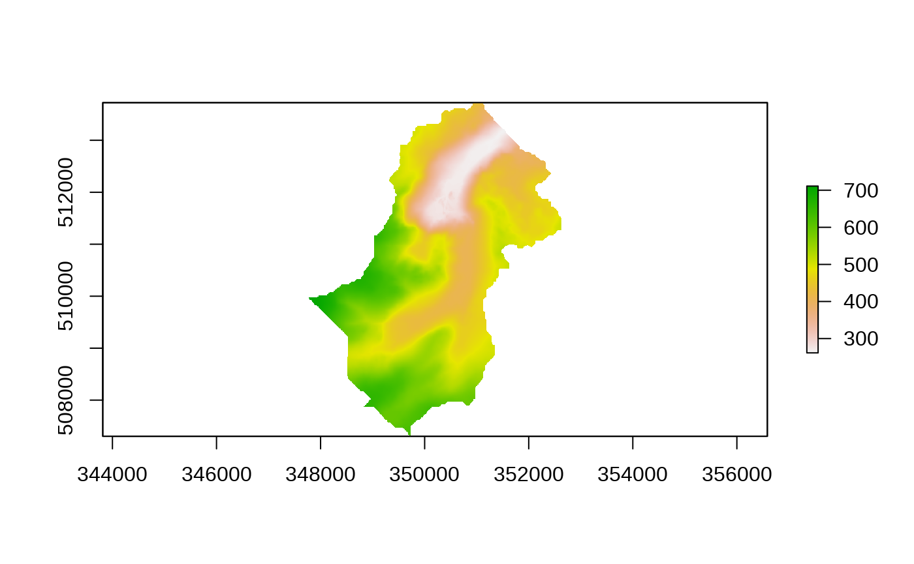
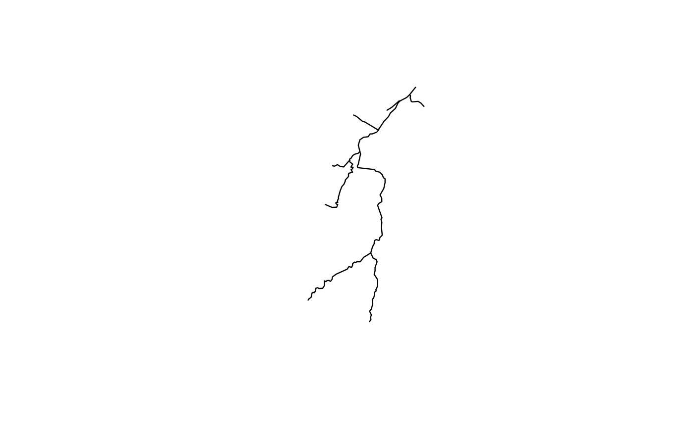
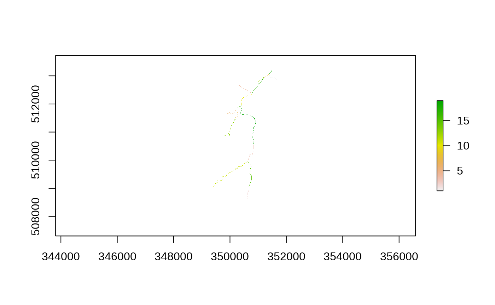
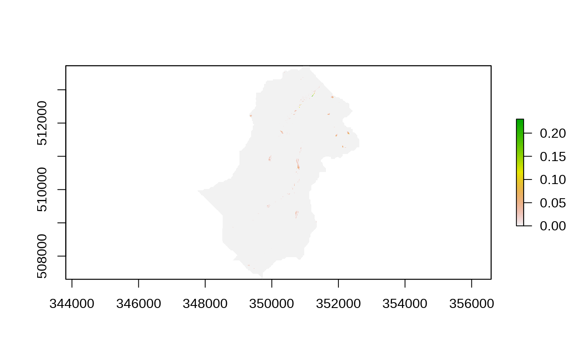
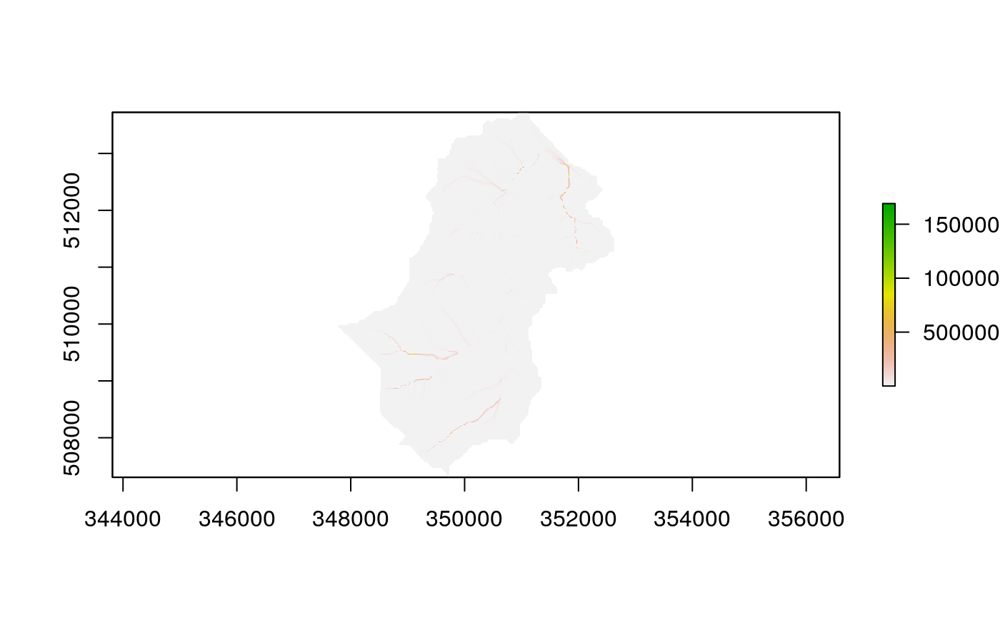
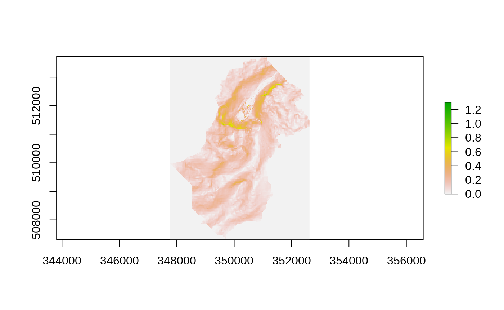
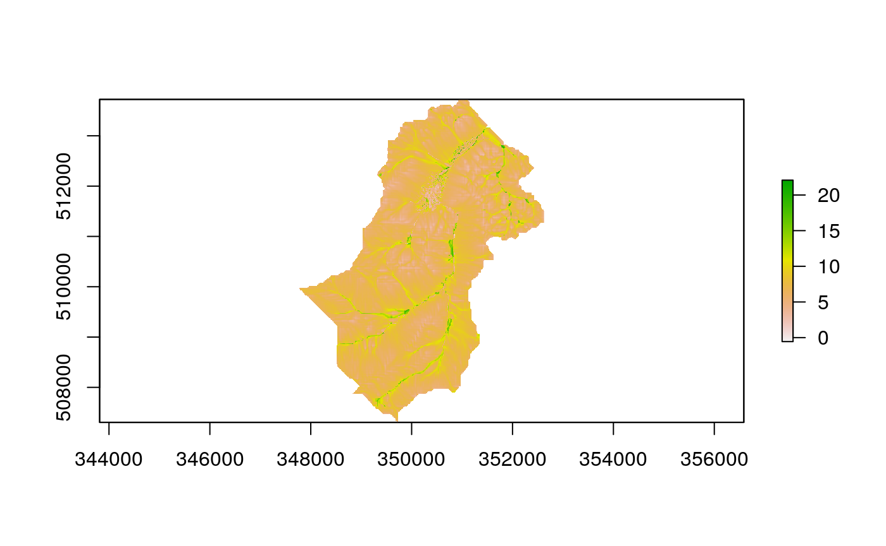

The purpose of this vignette is to provide an outline of the steps needed to build a dynamic TOPMODEL implimentation using the dynatopGIS package.
The dynatopGIS package is designed to work with a structured data flow, where by GIS data are processed through intermediate stages until one or more dynamic TOPMODEL implimentations are produced. The process GIS data of the intermediate stages are written into files with a common directory that acts as record of the work undertaken. Coupling this with a document such as this vignette which documents the workflow should significantly enhance the chances of ensuring the work is reproducable.
The basis of the analysis is presumed to be a rasterised Digital Elevation Model (DEM) of the catchment and a vectorised representation of the river network with attributes. Current these can be in any format supported by the and libraries.
There are however a number of limitations * Within the calculations of the gradient used within the sink filling, flow routing and topographic index calculation the raster DEM is presumed to be in a projection that is has square or rectangular cells such that the difference between the cells centers (in meters) does not alter. * Intermediate files are written in GeoTIFF and shapefile format. The GeoTIFF does not keep projection information, however the dimensions asn projection of the original DEM are maintained
The use of the dynatopGIS package is demonstrated using data from the Swindale catchment in the UK.
Start the analysis by loading the package and specifying a path for the project to which the intermediate files will be written.
##devtools::load_all()
library(dynatopGIS)
project_path <- file.path(tempdir(),'vig') #'../../gis_vig' #tmpDir()
dir.create(project_path)
print(project_path)
#> [1] "/tmp/RtmpPKRHOQ/vig"The package contains helper functions for reading the DEM and river network. These read in the specified files and outputs them to the project directory in a standard format. For the DEM this is straight forward
dem_file <-
load_dem(system.file("extdata", "SwindaleDTM4mFilled.tif", package = "dynatopGIS", mustWork = TRUE),
project_path)
raster::plot( raster::raster(file.path(project_path,'dem.tif')) ) As with most of the functions the value is returned is the function completes successfully.
Reading the river channel data is more complex since each vector object in the GIS file is treated as a length of river reach and requires the following properties * chanel_id - the identifier of which model dynamic TOPMODEL channel HRU the vector object belongs to * width - the width of the channel length * endNode - a label for the downstream end of the river length * startNode - a label for the upstream end of the river length * length - the length in meters
Currently only the channel_id and width properties are used, but it is considered in later releases that the remaining properties will describe the connectivity of the river network and distance from outlet.
These properties are provided to the function as a named vector, in the case of Swindale
property_names <- c(chanel_id="identifier",
endNode="endNode",
startNode="startNode",
length="length")Since the underlying data set for Swindale does not contain a channel width we use the default width of 2m in . The river network to be imported by calling
load_channel(system.file("extdata", "SwindaleRiverNetwork.shp", package = "dynatopGIS", mustWork = TRUE),
property_names,project_path)
#> Warning in load_channel(system.file("extdata",
#> "SwindaleRiverNetwork.shp", : Using default width of 2m
#> OGR data source with driver: ESRI Shapefile
#> Source: "/home/paul/R/x86_64-suse-linux-gnu-library/3.6/dynatopGIS/extdata/SwindaleRiverNetwork.shp", layer: "SwindaleRiverNetwork"
#> with 19 features
#> It has 11 fields
#> Integer64 fields read as strings: length
#> Warning in rgdal::readOGR(file_name, stringsAsFactors = FALSE): Z-dimension
#> discarded
#> Warning in fun(libname, pkgname): rgeos: versions of GEOS runtime 3.7.2-CAPI-1.11.2
#> and GEOS at installation 3.7.1-CAPI-1.11.1differ
#> [1] TRUE
raster::plot( raster::shapefile(file.path(project_path,'channel')) )
Having loaded the channel and DEM the next stage is to combine the channel network and the DEM. the function acheives this by intersecting the DEM and river network to determine which of the raster DEM cells contain parts of the river network. From this three raster maps are produced containing: * the area in the DEM cell covered by land * the area in the DEM cell covered by channel * the id of the channel If multiple river lengths intersect a DEM cell the id of that with the largest intersection is used.
For Swindale an indication of the intersected DEM cells is given int he follwoing plot.is case combing the DEM and river network
print(list.files(project_path))
#> [1] "channel.dbf" "channel.prj" "channel.shp" "channel.shx" "dem.tif"
add_channel(project_path)
#> Warning in .local(x, ...): This function is only useful for Raster* objects
#> with a longitude/latitude coordinates
#> [1] TRUE
raster::plot( raster::raster(file.path(project_path,'channel_id.tif')) ) # Filling sinks
For the hillslope to be connected to the rivernework the hillslope parts of the DEM but drain to the DEM cells which intersect with the river network.
While no check is enforced on the full connectivity ofthe catchment a basic requirement is that there are no sinks: that is DEM pixels which are lower then their neighbours and not intersected by the network. The algorithm implimented in the function tries to ensure this using a relatively simple iterative algorithm. te execution time of the function is limited by capping the number of iterations of the algorithm, howver the algorithm can be restarted and the minimum gradient adjuest from the default of 1m in 1km.
For Swindale, where the example DEM is already partially filled the algorithm finishes quickly and the changes in the DEM are minor
sink_fill(project_path,max_iter = 1000)
#> The number of sinks handled in iteration 1 is 6984
#> The number of sinks handled in iteration 2 is 5880
#> The number of sinks handled in iteration 3 is 4826
#> The number of sinks handled in iteration 4 is 3946
#> The number of sinks handled in iteration 5 is 3225
#> The number of sinks handled in iteration 6 is 2654
#> The number of sinks handled in iteration 7 is 2233
#> The number of sinks handled in iteration 8 is 1845
#> The number of sinks handled in iteration 9 is 1511
#> The number of sinks handled in iteration 10 is 1244
#> The number of sinks handled in iteration 11 is 983
#> The number of sinks handled in iteration 12 is 795
#> The number of sinks handled in iteration 13 is 608
#> The number of sinks handled in iteration 14 is 477
#> The number of sinks handled in iteration 15 is 321
#> The number of sinks handled in iteration 16 is 211
#> The number of sinks handled in iteration 17 is 152
#> The number of sinks handled in iteration 18 is 127
#> The number of sinks handled in iteration 19 is 115
#> The number of sinks handled in iteration 20 is 103
#> The number of sinks handled in iteration 21 is 89
#> The number of sinks handled in iteration 22 is 82
#> The number of sinks handled in iteration 23 is 64
#> The number of sinks handled in iteration 24 is 60
#> The number of sinks handled in iteration 25 is 56
#> The number of sinks handled in iteration 26 is 54
#> The number of sinks handled in iteration 27 is 47
#> The number of sinks handled in iteration 28 is 36
#> The number of sinks handled in iteration 29 is 31
#> The number of sinks handled in iteration 30 is 27
#> The number of sinks handled in iteration 31 is 26
#> The number of sinks handled in iteration 32 is 24
#> The number of sinks handled in iteration 33 is 22
#> The number of sinks handled in iteration 34 is 21
#> The number of sinks handled in iteration 35 is 20
#> The number of sinks handled in iteration 36 is 20
#> The number of sinks handled in iteration 37 is 19
#> The number of sinks handled in iteration 38 is 19
#> The number of sinks handled in iteration 39 is 15
#> The number of sinks handled in iteration 40 is 10
#> The number of sinks handled in iteration 41 is 4
#> The number of sinks handled in iteration 42 is 1
#> The number of sinks handled in iteration 43 is 1
#> The number of sinks handled in iteration 44 is 0
#> [1] TRUE
raster::plot( raster::raster(file.path(project_path,'filled_dem.tif')) - raster::raster(file.path(project_path,'dem.tif')) )
The basis of seperation of the hydrological response units in TOPMODEL is the topographic index, which is computeed from the upstream area and gradient.
The upstream area is computed by routing down slope with the fraction of the area being routed to the next downstream pixel being proportional to the gradient. Ths can be evaluated with
upslope_area(project_path,max_iter = 2000)
#> The number of cells left to propogate after iteration 1 is 949281
#> The number of cells left to propogate after iteration 2 is 947590
#> The number of cells left to propogate after iteration 3 is 945712
#> The number of cells left to propogate after iteration 4 is 944045
#> The number of cells left to propogate after iteration 5 is 942334
#> The number of cells left to propogate after iteration 6 is 940812
#> The number of cells left to propogate after iteration 7 is 939290
#> The number of cells left to propogate after iteration 8 is 937891
#> The number of cells left to propogate after iteration 9 is 936470
#> The number of cells left to propogate after iteration 10 is 935130
#> The number of cells left to propogate after iteration 11 is 933738
#> The number of cells left to propogate after iteration 12 is 932458
#> The number of cells left to propogate after iteration 13 is 931087
#> The number of cells left to propogate after iteration 14 is 929576
#> The number of cells left to propogate after iteration 15 is 928287
#> The number of cells left to propogate after iteration 16 is 927028
#> The number of cells left to propogate after iteration 17 is 925775
#> The number of cells left to propogate after iteration 18 is 924498
#> The number of cells left to propogate after iteration 19 is 923255
#> The number of cells left to propogate after iteration 20 is 922037
#> The number of cells left to propogate after iteration 21 is 920736
#> The number of cells left to propogate after iteration 22 is 919417
#> The number of cells left to propogate after iteration 23 is 918230
#> The number of cells left to propogate after iteration 24 is 916861
#> The number of cells left to propogate after iteration 25 is 915481
#> The number of cells left to propogate after iteration 26 is 914130
#> The number of cells left to propogate after iteration 27 is 912835
#> The number of cells left to propogate after iteration 28 is 911713
#> The number of cells left to propogate after iteration 29 is 910585
#> The number of cells left to propogate after iteration 30 is 909505
#> The number of cells left to propogate after iteration 31 is 908369
#> The number of cells left to propogate after iteration 32 is 907267
#> The number of cells left to propogate after iteration 33 is 906138
#> The number of cells left to propogate after iteration 34 is 905011
#> The number of cells left to propogate after iteration 35 is 903900
#> The number of cells left to propogate after iteration 36 is 902800
#> The number of cells left to propogate after iteration 37 is 901698
#> The number of cells left to propogate after iteration 38 is 900421
#> The number of cells left to propogate after iteration 39 is 899448
#> The number of cells left to propogate after iteration 40 is 898341
#> The number of cells left to propogate after iteration 41 is 897295
#> The number of cells left to propogate after iteration 42 is 896199
#> The number of cells left to propogate after iteration 43 is 895169
#> The number of cells left to propogate after iteration 44 is 894045
#> The number of cells left to propogate after iteration 45 is 892623
#> The number of cells left to propogate after iteration 46 is 891700
#> The number of cells left to propogate after iteration 47 is 890729
#> The number of cells left to propogate after iteration 48 is 889266
#> The number of cells left to propogate after iteration 49 is 888302
#> The number of cells left to propogate after iteration 50 is 887359
#> The number of cells left to propogate after iteration 51 is 886380
#> The number of cells left to propogate after iteration 52 is 885404
#> The number of cells left to propogate after iteration 53 is 884316
#> The number of cells left to propogate after iteration 54 is 883321
#> The number of cells left to propogate after iteration 55 is 882309
#> The number of cells left to propogate after iteration 56 is 881343
#> The number of cells left to propogate after iteration 57 is 879951
#> The number of cells left to propogate after iteration 58 is 878765
#> The number of cells left to propogate after iteration 59 is 877710
#> The number of cells left to propogate after iteration 60 is 876648
#> The number of cells left to propogate after iteration 61 is 875617
#> The number of cells left to propogate after iteration 62 is 874617
#> The number of cells left to propogate after iteration 63 is 873605
#> The number of cells left to propogate after iteration 64 is 872620
#> The number of cells left to propogate after iteration 65 is 871636
#> The number of cells left to propogate after iteration 66 is 870704
#> The number of cells left to propogate after iteration 67 is 869556
#> The number of cells left to propogate after iteration 68 is 868556
#> The number of cells left to propogate after iteration 69 is 867530
#> The number of cells left to propogate after iteration 70 is 866515
#> The number of cells left to propogate after iteration 71 is 865505
#> The number of cells left to propogate after iteration 72 is 864462
#> The number of cells left to propogate after iteration 73 is 863491
#> The number of cells left to propogate after iteration 74 is 862377
#> The number of cells left to propogate after iteration 75 is 861348
#> The number of cells left to propogate after iteration 76 is 860285
#> The number of cells left to propogate after iteration 77 is 859279
#> The number of cells left to propogate after iteration 78 is 858270
#> The number of cells left to propogate after iteration 79 is 857277
#> The number of cells left to propogate after iteration 80 is 856313
#> The number of cells left to propogate after iteration 81 is 855378
#> The number of cells left to propogate after iteration 82 is 854467
#> The number of cells left to propogate after iteration 83 is 853540
#> The number of cells left to propogate after iteration 84 is 852394
#> The number of cells left to propogate after iteration 85 is 851354
#> The number of cells left to propogate after iteration 86 is 850383
#> The number of cells left to propogate after iteration 87 is 849272
#> The number of cells left to propogate after iteration 88 is 848149
#> The number of cells left to propogate after iteration 89 is 847121
#> The number of cells left to propogate after iteration 90 is 846178
#> The number of cells left to propogate after iteration 91 is 844853
#> The number of cells left to propogate after iteration 92 is 843908
#> The number of cells left to propogate after iteration 93 is 842832
#> The number of cells left to propogate after iteration 94 is 841805
#> The number of cells left to propogate after iteration 95 is 840787
#> The number of cells left to propogate after iteration 96 is 839851
#> The number of cells left to propogate after iteration 97 is 838888
#> The number of cells left to propogate after iteration 98 is 837928
#> The number of cells left to propogate after iteration 99 is 836893
#> The number of cells left to propogate after iteration 100 is 835902
#> The number of cells left to propogate after iteration 101 is 834848
#> The number of cells left to propogate after iteration 102 is 833960
#> The number of cells left to propogate after iteration 103 is 832829
#> The number of cells left to propogate after iteration 104 is 831921
#> The number of cells left to propogate after iteration 105 is 830777
#> The number of cells left to propogate after iteration 106 is 829828
#> The number of cells left to propogate after iteration 107 is 828510
#> The number of cells left to propogate after iteration 108 is 827330
#> The number of cells left to propogate after iteration 109 is 826156
#> The number of cells left to propogate after iteration 110 is 824981
#> The number of cells left to propogate after iteration 111 is 823980
#> The number of cells left to propogate after iteration 112 is 822894
#> The number of cells left to propogate after iteration 113 is 821787
#> The number of cells left to propogate after iteration 114 is 820658
#> The number of cells left to propogate after iteration 115 is 819658
#> The number of cells left to propogate after iteration 116 is 818509
#> The number of cells left to propogate after iteration 117 is 817516
#> The number of cells left to propogate after iteration 118 is 816441
#> The number of cells left to propogate after iteration 119 is 815430
#> The number of cells left to propogate after iteration 120 is 814261
#> The number of cells left to propogate after iteration 121 is 813134
#> The number of cells left to propogate after iteration 122 is 811935
#> The number of cells left to propogate after iteration 123 is 810827
#> The number of cells left to propogate after iteration 124 is 809540
#> The number of cells left to propogate after iteration 125 is 808223
#> The number of cells left to propogate after iteration 126 is 806898
#> The number of cells left to propogate after iteration 127 is 805531
#> The number of cells left to propogate after iteration 128 is 804219
#> The number of cells left to propogate after iteration 129 is 803076
#> The number of cells left to propogate after iteration 130 is 801992
#> The number of cells left to propogate after iteration 131 is 800868
#> The number of cells left to propogate after iteration 132 is 799742
#> The number of cells left to propogate after iteration 133 is 798578
#> The number of cells left to propogate after iteration 134 is 797644
#> The number of cells left to propogate after iteration 135 is 796736
#> The number of cells left to propogate after iteration 136 is 795688
#> The number of cells left to propogate after iteration 137 is 794678
#> The number of cells left to propogate after iteration 138 is 793603
#> The number of cells left to propogate after iteration 139 is 792402
#> The number of cells left to propogate after iteration 140 is 790817
#> The number of cells left to propogate after iteration 141 is 789784
#> The number of cells left to propogate after iteration 142 is 788759
#> The number of cells left to propogate after iteration 143 is 787811
#> The number of cells left to propogate after iteration 144 is 786747
#> The number of cells left to propogate after iteration 145 is 785723
#> The number of cells left to propogate after iteration 146 is 784609
#> The number of cells left to propogate after iteration 147 is 783555
#> The number of cells left to propogate after iteration 148 is 782548
#> The number of cells left to propogate after iteration 149 is 781574
#> The number of cells left to propogate after iteration 150 is 780575
#> The number of cells left to propogate after iteration 151 is 779503
#> The number of cells left to propogate after iteration 152 is 778476
#> The number of cells left to propogate after iteration 153 is 777464
#> The number of cells left to propogate after iteration 154 is 776456
#> The number of cells left to propogate after iteration 155 is 775289
#> The number of cells left to propogate after iteration 156 is 774164
#> The number of cells left to propogate after iteration 157 is 773086
#> The number of cells left to propogate after iteration 158 is 771814
#> The number of cells left to propogate after iteration 159 is 770645
#> The number of cells left to propogate after iteration 160 is 769249
#> The number of cells left to propogate after iteration 161 is 768066
#> The number of cells left to propogate after iteration 162 is 766849
#> The number of cells left to propogate after iteration 163 is 765647
#> The number of cells left to propogate after iteration 164 is 764450
#> The number of cells left to propogate after iteration 165 is 763243
#> The number of cells left to propogate after iteration 166 is 761983
#> The number of cells left to propogate after iteration 167 is 760672
#> The number of cells left to propogate after iteration 168 is 759361
#> The number of cells left to propogate after iteration 169 is 757942
#> The number of cells left to propogate after iteration 170 is 756441
#> The number of cells left to propogate after iteration 171 is 755129
#> The number of cells left to propogate after iteration 172 is 753702
#> The number of cells left to propogate after iteration 173 is 752186
#> The number of cells left to propogate after iteration 174 is 750996
#> The number of cells left to propogate after iteration 175 is 749672
#> The number of cells left to propogate after iteration 176 is 748300
#> The number of cells left to propogate after iteration 177 is 747235
#> The number of cells left to propogate after iteration 178 is 746049
#> The number of cells left to propogate after iteration 179 is 745012
#> The number of cells left to propogate after iteration 180 is 743938
#> The number of cells left to propogate after iteration 181 is 742926
#> The number of cells left to propogate after iteration 182 is 741853
#> The number of cells left to propogate after iteration 183 is 740842
#> The number of cells left to propogate after iteration 184 is 739685
#> The number of cells left to propogate after iteration 185 is 738509
#> The number of cells left to propogate after iteration 186 is 737202
#> The number of cells left to propogate after iteration 187 is 736099
#> The number of cells left to propogate after iteration 188 is 735004
#> The number of cells left to propogate after iteration 189 is 733695
#> The number of cells left to propogate after iteration 190 is 732317
#> The number of cells left to propogate after iteration 191 is 731007
#> The number of cells left to propogate after iteration 192 is 729814
#> The number of cells left to propogate after iteration 193 is 728528
#> The number of cells left to propogate after iteration 194 is 727456
#> The number of cells left to propogate after iteration 195 is 726349
#> The number of cells left to propogate after iteration 196 is 725271
#> The number of cells left to propogate after iteration 197 is 724145
#> The number of cells left to propogate after iteration 198 is 723146
#> The number of cells left to propogate after iteration 199 is 722133
#> The number of cells left to propogate after iteration 200 is 721005
#> The number of cells left to propogate after iteration 201 is 719824
#> The number of cells left to propogate after iteration 202 is 718754
#> The number of cells left to propogate after iteration 203 is 717614
#> The number of cells left to propogate after iteration 204 is 716509
#> The number of cells left to propogate after iteration 205 is 715366
#> The number of cells left to propogate after iteration 206 is 714194
#> The number of cells left to propogate after iteration 207 is 713174
#> The number of cells left to propogate after iteration 208 is 711992
#> The number of cells left to propogate after iteration 209 is 710863
#> The number of cells left to propogate after iteration 210 is 709706
#> The number of cells left to propogate after iteration 211 is 708560
#> The number of cells left to propogate after iteration 212 is 707309
#> The number of cells left to propogate after iteration 213 is 706072
#> The number of cells left to propogate after iteration 214 is 704702
#> The number of cells left to propogate after iteration 215 is 703564
#> The number of cells left to propogate after iteration 216 is 702380
#> The number of cells left to propogate after iteration 217 is 701167
#> The number of cells left to propogate after iteration 218 is 699949
#> The number of cells left to propogate after iteration 219 is 698304
#> The number of cells left to propogate after iteration 220 is 697165
#> The number of cells left to propogate after iteration 221 is 695867
#> The number of cells left to propogate after iteration 222 is 694699
#> The number of cells left to propogate after iteration 223 is 693383
#> The number of cells left to propogate after iteration 224 is 692158
#> The number of cells left to propogate after iteration 225 is 690897
#> The number of cells left to propogate after iteration 226 is 689408
#> The number of cells left to propogate after iteration 227 is 688171
#> The number of cells left to propogate after iteration 228 is 686999
#> The number of cells left to propogate after iteration 229 is 685771
#> The number of cells left to propogate after iteration 230 is 684554
#> The number of cells left to propogate after iteration 231 is 683444
#> The number of cells left to propogate after iteration 232 is 682234
#> The number of cells left to propogate after iteration 233 is 681042
#> The number of cells left to propogate after iteration 234 is 678598
#> The number of cells left to propogate after iteration 235 is 677131
#> The number of cells left to propogate after iteration 236 is 675751
#> The number of cells left to propogate after iteration 237 is 674229
#> The number of cells left to propogate after iteration 238 is 672620
#> The number of cells left to propogate after iteration 239 is 670649
#> The number of cells left to propogate after iteration 240 is 669117
#> The number of cells left to propogate after iteration 241 is 667709
#> The number of cells left to propogate after iteration 242 is 665934
#> The number of cells left to propogate after iteration 243 is 664589
#> The number of cells left to propogate after iteration 244 is 663167
#> The number of cells left to propogate after iteration 245 is 661715
#> The number of cells left to propogate after iteration 246 is 660393
#> The number of cells left to propogate after iteration 247 is 658976
#> The number of cells left to propogate after iteration 248 is 657522
#> The number of cells left to propogate after iteration 249 is 656235
#> The number of cells left to propogate after iteration 250 is 654780
#> The number of cells left to propogate after iteration 251 is 653475
#> The number of cells left to propogate after iteration 252 is 652013
#> The number of cells left to propogate after iteration 253 is 650318
#> The number of cells left to propogate after iteration 254 is 648897
#> The number of cells left to propogate after iteration 255 is 647691
#> The number of cells left to propogate after iteration 256 is 646532
#> The number of cells left to propogate after iteration 257 is 645301
#> The number of cells left to propogate after iteration 258 is 644017
#> The number of cells left to propogate after iteration 259 is 642850
#> The number of cells left to propogate after iteration 260 is 641523
#> The number of cells left to propogate after iteration 261 is 640342
#> The number of cells left to propogate after iteration 262 is 639206
#> The number of cells left to propogate after iteration 263 is 638090
#> The number of cells left to propogate after iteration 264 is 637079
#> The number of cells left to propogate after iteration 265 is 635915
#> The number of cells left to propogate after iteration 266 is 634770
#> The number of cells left to propogate after iteration 267 is 633485
#> The number of cells left to propogate after iteration 268 is 632407
#> The number of cells left to propogate after iteration 269 is 631153
#> The number of cells left to propogate after iteration 270 is 629954
#> The number of cells left to propogate after iteration 271 is 628135
#> The number of cells left to propogate after iteration 272 is 626916
#> The number of cells left to propogate after iteration 273 is 625555
#> The number of cells left to propogate after iteration 274 is 624304
#> The number of cells left to propogate after iteration 275 is 623004
#> The number of cells left to propogate after iteration 276 is 621688
#> The number of cells left to propogate after iteration 277 is 620176
#> The number of cells left to propogate after iteration 278 is 618790
#> The number of cells left to propogate after iteration 279 is 617431
#> The number of cells left to propogate after iteration 280 is 616142
#> The number of cells left to propogate after iteration 281 is 614835
#> The number of cells left to propogate after iteration 282 is 613510
#> The number of cells left to propogate after iteration 283 is 611426
#> The number of cells left to propogate after iteration 284 is 610044
#> The number of cells left to propogate after iteration 285 is 608795
#> The number of cells left to propogate after iteration 286 is 607310
#> The number of cells left to propogate after iteration 287 is 606055
#> The number of cells left to propogate after iteration 288 is 604540
#> The number of cells left to propogate after iteration 289 is 603088
#> The number of cells left to propogate after iteration 290 is 601588
#> The number of cells left to propogate after iteration 291 is 600310
#> The number of cells left to propogate after iteration 292 is 598643
#> The number of cells left to propogate after iteration 293 is 597048
#> The number of cells left to propogate after iteration 294 is 595174
#> The number of cells left to propogate after iteration 295 is 593664
#> The number of cells left to propogate after iteration 296 is 592232
#> The number of cells left to propogate after iteration 297 is 590248
#> The number of cells left to propogate after iteration 298 is 588522
#> The number of cells left to propogate after iteration 299 is 586787
#> The number of cells left to propogate after iteration 300 is 585061
#> The number of cells left to propogate after iteration 301 is 583330
#> The number of cells left to propogate after iteration 302 is 581770
#> The number of cells left to propogate after iteration 303 is 579938
#> The number of cells left to propogate after iteration 304 is 578233
#> The number of cells left to propogate after iteration 305 is 576638
#> The number of cells left to propogate after iteration 306 is 575074
#> The number of cells left to propogate after iteration 307 is 573511
#> The number of cells left to propogate after iteration 308 is 571919
#> The number of cells left to propogate after iteration 309 is 570573
#> The number of cells left to propogate after iteration 310 is 569249
#> The number of cells left to propogate after iteration 311 is 567824
#> The number of cells left to propogate after iteration 312 is 566318
#> The number of cells left to propogate after iteration 313 is 564998
#> The number of cells left to propogate after iteration 314 is 563597
#> The number of cells left to propogate after iteration 315 is 562177
#> The number of cells left to propogate after iteration 316 is 560694
#> The number of cells left to propogate after iteration 317 is 559195
#> The number of cells left to propogate after iteration 318 is 557799
#> The number of cells left to propogate after iteration 319 is 556519
#> The number of cells left to propogate after iteration 320 is 555242
#> The number of cells left to propogate after iteration 321 is 553844
#> The number of cells left to propogate after iteration 322 is 552617
#> The number of cells left to propogate after iteration 323 is 551334
#> The number of cells left to propogate after iteration 324 is 550182
#> The number of cells left to propogate after iteration 325 is 549072
#> The number of cells left to propogate after iteration 326 is 547892
#> The number of cells left to propogate after iteration 327 is 546819
#> The number of cells left to propogate after iteration 328 is 545785
#> The number of cells left to propogate after iteration 329 is 544748
#> The number of cells left to propogate after iteration 330 is 543823
#> The number of cells left to propogate after iteration 331 is 542784
#> The number of cells left to propogate after iteration 332 is 541669
#> The number of cells left to propogate after iteration 333 is 540590
#> The number of cells left to propogate after iteration 334 is 539614
#> The number of cells left to propogate after iteration 335 is 538851
#> The number of cells left to propogate after iteration 336 is 538003
#> The number of cells left to propogate after iteration 337 is 537069
#> The number of cells left to propogate after iteration 338 is 536117
#> The number of cells left to propogate after iteration 339 is 534904
#> The number of cells left to propogate after iteration 340 is 533936
#> The number of cells left to propogate after iteration 341 is 532825
#> The number of cells left to propogate after iteration 342 is 531839
#> The number of cells left to propogate after iteration 343 is 530830
#> The number of cells left to propogate after iteration 344 is 529746
#> The number of cells left to propogate after iteration 345 is 528719
#> The number of cells left to propogate after iteration 346 is 527873
#> The number of cells left to propogate after iteration 347 is 526980
#> The number of cells left to propogate after iteration 348 is 526149
#> The number of cells left to propogate after iteration 349 is 525219
#> The number of cells left to propogate after iteration 350 is 524215
#> The number of cells left to propogate after iteration 351 is 523083
#> The number of cells left to propogate after iteration 352 is 522117
#> The number of cells left to propogate after iteration 353 is 521094
#> The number of cells left to propogate after iteration 354 is 520229
#> The number of cells left to propogate after iteration 355 is 519179
#> The number of cells left to propogate after iteration 356 is 518203
#> The number of cells left to propogate after iteration 357 is 517262
#> The number of cells left to propogate after iteration 358 is 516346
#> The number of cells left to propogate after iteration 359 is 515423
#> The number of cells left to propogate after iteration 360 is 514491
#> The number of cells left to propogate after iteration 361 is 513593
#> The number of cells left to propogate after iteration 362 is 512666
#> The number of cells left to propogate after iteration 363 is 511729
#> The number of cells left to propogate after iteration 364 is 510882
#> The number of cells left to propogate after iteration 365 is 509898
#> The number of cells left to propogate after iteration 366 is 508874
#> The number of cells left to propogate after iteration 367 is 507840
#> The number of cells left to propogate after iteration 368 is 506795
#> The number of cells left to propogate after iteration 369 is 505839
#> The number of cells left to propogate after iteration 370 is 504893
#> The number of cells left to propogate after iteration 371 is 504028
#> The number of cells left to propogate after iteration 372 is 503182
#> The number of cells left to propogate after iteration 373 is 502383
#> The number of cells left to propogate after iteration 374 is 501534
#> The number of cells left to propogate after iteration 375 is 500590
#> The number of cells left to propogate after iteration 376 is 499735
#> The number of cells left to propogate after iteration 377 is 498809
#> The number of cells left to propogate after iteration 378 is 497912
#> The number of cells left to propogate after iteration 379 is 496938
#> The number of cells left to propogate after iteration 380 is 495934
#> The number of cells left to propogate after iteration 381 is 495052
#> The number of cells left to propogate after iteration 382 is 494253
#> The number of cells left to propogate after iteration 383 is 493303
#> The number of cells left to propogate after iteration 384 is 492317
#> The number of cells left to propogate after iteration 385 is 491386
#> The number of cells left to propogate after iteration 386 is 490363
#> The number of cells left to propogate after iteration 387 is 489087
#> The number of cells left to propogate after iteration 388 is 487854
#> The number of cells left to propogate after iteration 389 is 486616
#> The number of cells left to propogate after iteration 390 is 485430
#> The number of cells left to propogate after iteration 391 is 484311
#> The number of cells left to propogate after iteration 392 is 482901
#> The number of cells left to propogate after iteration 393 is 481789
#> The number of cells left to propogate after iteration 394 is 480654
#> The number of cells left to propogate after iteration 395 is 479538
#> The number of cells left to propogate after iteration 396 is 478387
#> The number of cells left to propogate after iteration 397 is 477427
#> The number of cells left to propogate after iteration 398 is 476362
#> The number of cells left to propogate after iteration 399 is 475307
#> The number of cells left to propogate after iteration 400 is 474188
#> The number of cells left to propogate after iteration 401 is 473140
#> The number of cells left to propogate after iteration 402 is 472056
#> The number of cells left to propogate after iteration 403 is 471114
#> The number of cells left to propogate after iteration 404 is 470145
#> The number of cells left to propogate after iteration 405 is 469296
#> The number of cells left to propogate after iteration 406 is 467593
#> The number of cells left to propogate after iteration 407 is 466717
#> The number of cells left to propogate after iteration 408 is 465698
#> The number of cells left to propogate after iteration 409 is 464680
#> The number of cells left to propogate after iteration 410 is 463636
#> The number of cells left to propogate after iteration 411 is 462680
#> The number of cells left to propogate after iteration 412 is 461642
#> The number of cells left to propogate after iteration 413 is 460752
#> The number of cells left to propogate after iteration 414 is 459827
#> The number of cells left to propogate after iteration 415 is 458949
#> The number of cells left to propogate after iteration 416 is 457990
#> The number of cells left to propogate after iteration 417 is 456978
#> The number of cells left to propogate after iteration 418 is 455869
#> The number of cells left to propogate after iteration 419 is 454910
#> The number of cells left to propogate after iteration 420 is 453871
#> The number of cells left to propogate after iteration 421 is 453024
#> The number of cells left to propogate after iteration 422 is 452040
#> The number of cells left to propogate after iteration 423 is 451077
#> The number of cells left to propogate after iteration 424 is 450108
#> The number of cells left to propogate after iteration 425 is 449314
#> The number of cells left to propogate after iteration 426 is 448480
#> The number of cells left to propogate after iteration 427 is 446583
#> The number of cells left to propogate after iteration 428 is 445718
#> The number of cells left to propogate after iteration 429 is 444956
#> The number of cells left to propogate after iteration 430 is 444008
#> The number of cells left to propogate after iteration 431 is 443245
#> The number of cells left to propogate after iteration 432 is 442450
#> The number of cells left to propogate after iteration 433 is 441604
#> The number of cells left to propogate after iteration 434 is 440786
#> The number of cells left to propogate after iteration 435 is 439986
#> The number of cells left to propogate after iteration 436 is 438831
#> The number of cells left to propogate after iteration 437 is 437966
#> The number of cells left to propogate after iteration 438 is 436147
#> The number of cells left to propogate after iteration 439 is 435274
#> The number of cells left to propogate after iteration 440 is 434208
#> The number of cells left to propogate after iteration 441 is 433202
#> The number of cells left to propogate after iteration 442 is 432076
#> The number of cells left to propogate after iteration 443 is 430871
#> The number of cells left to propogate after iteration 444 is 429653
#> The number of cells left to propogate after iteration 445 is 428573
#> The number of cells left to propogate after iteration 446 is 427348
#> The number of cells left to propogate after iteration 447 is 426218
#> The number of cells left to propogate after iteration 448 is 424963
#> The number of cells left to propogate after iteration 449 is 424090
#> The number of cells left to propogate after iteration 450 is 423164
#> The number of cells left to propogate after iteration 451 is 422362
#> The number of cells left to propogate after iteration 452 is 421474
#> The number of cells left to propogate after iteration 453 is 420662
#> The number of cells left to propogate after iteration 454 is 419791
#> The number of cells left to propogate after iteration 455 is 418899
#> The number of cells left to propogate after iteration 456 is 418094
#> The number of cells left to propogate after iteration 457 is 417222
#> The number of cells left to propogate after iteration 458 is 416449
#> The number of cells left to propogate after iteration 459 is 415673
#> The number of cells left to propogate after iteration 460 is 414895
#> The number of cells left to propogate after iteration 461 is 414146
#> The number of cells left to propogate after iteration 462 is 413417
#> The number of cells left to propogate after iteration 463 is 412677
#> The number of cells left to propogate after iteration 464 is 411847
#> The number of cells left to propogate after iteration 465 is 411115
#> The number of cells left to propogate after iteration 466 is 410188
#> The number of cells left to propogate after iteration 467 is 409317
#> The number of cells left to propogate after iteration 468 is 408493
#> The number of cells left to propogate after iteration 469 is 407635
#> The number of cells left to propogate after iteration 470 is 406673
#> The number of cells left to propogate after iteration 471 is 405602
#> The number of cells left to propogate after iteration 472 is 404796
#> The number of cells left to propogate after iteration 473 is 403932
#> The number of cells left to propogate after iteration 474 is 402484
#> The number of cells left to propogate after iteration 475 is 401210
#> The number of cells left to propogate after iteration 476 is 400071
#> The number of cells left to propogate after iteration 477 is 399006
#> The number of cells left to propogate after iteration 478 is 398087
#> The number of cells left to propogate after iteration 479 is 397263
#> The number of cells left to propogate after iteration 480 is 396192
#> The number of cells left to propogate after iteration 481 is 395069
#> The number of cells left to propogate after iteration 482 is 394107
#> The number of cells left to propogate after iteration 483 is 393080
#> The number of cells left to propogate after iteration 484 is 392116
#> The number of cells left to propogate after iteration 485 is 391090
#> The number of cells left to propogate after iteration 486 is 390010
#> The number of cells left to propogate after iteration 487 is 388922
#> The number of cells left to propogate after iteration 488 is 387516
#> The number of cells left to propogate after iteration 489 is 386432
#> The number of cells left to propogate after iteration 490 is 385438
#> The number of cells left to propogate after iteration 491 is 384428
#> The number of cells left to propogate after iteration 492 is 383276
#> The number of cells left to propogate after iteration 493 is 382077
#> The number of cells left to propogate after iteration 494 is 380086
#> The number of cells left to propogate after iteration 495 is 378362
#> The number of cells left to propogate after iteration 496 is 377134
#> The number of cells left to propogate after iteration 497 is 375935
#> The number of cells left to propogate after iteration 498 is 374736
#> The number of cells left to propogate after iteration 499 is 373321
#> The number of cells left to propogate after iteration 500 is 371692
#> The number of cells left to propogate after iteration 501 is 368212
#> The number of cells left to propogate after iteration 502 is 367014
#> The number of cells left to propogate after iteration 503 is 365617
#> The number of cells left to propogate after iteration 504 is 364579
#> The number of cells left to propogate after iteration 505 is 363652
#> The number of cells left to propogate after iteration 506 is 362051
#> The number of cells left to propogate after iteration 507 is 361006
#> The number of cells left to propogate after iteration 508 is 359512
#> The number of cells left to propogate after iteration 509 is 358264
#> The number of cells left to propogate after iteration 510 is 357061
#> The number of cells left to propogate after iteration 511 is 355850
#> The number of cells left to propogate after iteration 512 is 354470
#> The number of cells left to propogate after iteration 513 is 353422
#> The number of cells left to propogate after iteration 514 is 352388
#> The number of cells left to propogate after iteration 515 is 351406
#> The number of cells left to propogate after iteration 516 is 350348
#> The number of cells left to propogate after iteration 517 is 349376
#> The number of cells left to propogate after iteration 518 is 348529
#> The number of cells left to propogate after iteration 519 is 347569
#> The number of cells left to propogate after iteration 520 is 346693
#> The number of cells left to propogate after iteration 521 is 345704
#> The number of cells left to propogate after iteration 522 is 344844
#> The number of cells left to propogate after iteration 523 is 342430
#> The number of cells left to propogate after iteration 524 is 341348
#> The number of cells left to propogate after iteration 525 is 340230
#> The number of cells left to propogate after iteration 526 is 339264
#> The number of cells left to propogate after iteration 527 is 338154
#> The number of cells left to propogate after iteration 528 is 337133
#> The number of cells left to propogate after iteration 529 is 335859
#> The number of cells left to propogate after iteration 530 is 334716
#> The number of cells left to propogate after iteration 531 is 333570
#> The number of cells left to propogate after iteration 532 is 332334
#> The number of cells left to propogate after iteration 533 is 331069
#> The number of cells left to propogate after iteration 534 is 329523
#> The number of cells left to propogate after iteration 535 is 328341
#> The number of cells left to propogate after iteration 536 is 327064
#> The number of cells left to propogate after iteration 537 is 325890
#> The number of cells left to propogate after iteration 538 is 324851
#> The number of cells left to propogate after iteration 539 is 323649
#> The number of cells left to propogate after iteration 540 is 322619
#> The number of cells left to propogate after iteration 541 is 321402
#> The number of cells left to propogate after iteration 542 is 320321
#> The number of cells left to propogate after iteration 543 is 318671
#> The number of cells left to propogate after iteration 544 is 317774
#> The number of cells left to propogate after iteration 545 is 316682
#> The number of cells left to propogate after iteration 546 is 315599
#> The number of cells left to propogate after iteration 547 is 314611
#> The number of cells left to propogate after iteration 548 is 313281
#> The number of cells left to propogate after iteration 549 is 312307
#> The number of cells left to propogate after iteration 550 is 311444
#> The number of cells left to propogate after iteration 551 is 309785
#> The number of cells left to propogate after iteration 552 is 308782
#> The number of cells left to propogate after iteration 553 is 307711
#> The number of cells left to propogate after iteration 554 is 306551
#> The number of cells left to propogate after iteration 555 is 305200
#> The number of cells left to propogate after iteration 556 is 303973
#> The number of cells left to propogate after iteration 557 is 302595
#> The number of cells left to propogate after iteration 558 is 301443
#> The number of cells left to propogate after iteration 559 is 300259
#> The number of cells left to propogate after iteration 560 is 298909
#> The number of cells left to propogate after iteration 561 is 297845
#> The number of cells left to propogate after iteration 562 is 296879
#> The number of cells left to propogate after iteration 563 is 295766
#> The number of cells left to propogate after iteration 564 is 293695
#> The number of cells left to propogate after iteration 565 is 292339
#> The number of cells left to propogate after iteration 566 is 291086
#> The number of cells left to propogate after iteration 567 is 290140
#> The number of cells left to propogate after iteration 568 is 288928
#> The number of cells left to propogate after iteration 569 is 287799
#> The number of cells left to propogate after iteration 570 is 286551
#> The number of cells left to propogate after iteration 571 is 284763
#> The number of cells left to propogate after iteration 572 is 283547
#> The number of cells left to propogate after iteration 573 is 280981
#> The number of cells left to propogate after iteration 574 is 279047
#> The number of cells left to propogate after iteration 575 is 277687
#> The number of cells left to propogate after iteration 576 is 276464
#> The number of cells left to propogate after iteration 577 is 275358
#> The number of cells left to propogate after iteration 578 is 273846
#> The number of cells left to propogate after iteration 579 is 272133
#> The number of cells left to propogate after iteration 580 is 270950
#> The number of cells left to propogate after iteration 581 is 268844
#> The number of cells left to propogate after iteration 582 is 267140
#> The number of cells left to propogate after iteration 583 is 265890
#> The number of cells left to propogate after iteration 584 is 264718
#> The number of cells left to propogate after iteration 585 is 262417
#> The number of cells left to propogate after iteration 586 is 261399
#> The number of cells left to propogate after iteration 587 is 260367
#> The number of cells left to propogate after iteration 588 is 259358
#> The number of cells left to propogate after iteration 589 is 258296
#> The number of cells left to propogate after iteration 590 is 257307
#> The number of cells left to propogate after iteration 591 is 256411
#> The number of cells left to propogate after iteration 592 is 254544
#> The number of cells left to propogate after iteration 593 is 253645
#> The number of cells left to propogate after iteration 594 is 252741
#> The number of cells left to propogate after iteration 595 is 251898
#> The number of cells left to propogate after iteration 596 is 251118
#> The number of cells left to propogate after iteration 597 is 250300
#> The number of cells left to propogate after iteration 598 is 249405
#> The number of cells left to propogate after iteration 599 is 248527
#> The number of cells left to propogate after iteration 600 is 247686
#> The number of cells left to propogate after iteration 601 is 246910
#> The number of cells left to propogate after iteration 602 is 246097
#> The number of cells left to propogate after iteration 603 is 245247
#> The number of cells left to propogate after iteration 604 is 244389
#> The number of cells left to propogate after iteration 605 is 243643
#> The number of cells left to propogate after iteration 606 is 242864
#> The number of cells left to propogate after iteration 607 is 242073
#> The number of cells left to propogate after iteration 608 is 241291
#> The number of cells left to propogate after iteration 609 is 240519
#> The number of cells left to propogate after iteration 610 is 239686
#> The number of cells left to propogate after iteration 611 is 238840
#> The number of cells left to propogate after iteration 612 is 237718
#> The number of cells left to propogate after iteration 613 is 236723
#> The number of cells left to propogate after iteration 614 is 235679
#> The number of cells left to propogate after iteration 615 is 234737
#> The number of cells left to propogate after iteration 616 is 233679
#> The number of cells left to propogate after iteration 617 is 232776
#> The number of cells left to propogate after iteration 618 is 231827
#> The number of cells left to propogate after iteration 619 is 231019
#> The number of cells left to propogate after iteration 620 is 230056
#> The number of cells left to propogate after iteration 621 is 229133
#> The number of cells left to propogate after iteration 622 is 228244
#> The number of cells left to propogate after iteration 623 is 227234
#> The number of cells left to propogate after iteration 624 is 226426
#> The number of cells left to propogate after iteration 625 is 225639
#> The number of cells left to propogate after iteration 626 is 224810
#> The number of cells left to propogate after iteration 627 is 224022
#> The number of cells left to propogate after iteration 628 is 223323
#> The number of cells left to propogate after iteration 629 is 222754
#> The number of cells left to propogate after iteration 630 is 221996
#> The number of cells left to propogate after iteration 631 is 221339
#> The number of cells left to propogate after iteration 632 is 220700
#> The number of cells left to propogate after iteration 633 is 219971
#> The number of cells left to propogate after iteration 634 is 219249
#> The number of cells left to propogate after iteration 635 is 218637
#> The number of cells left to propogate after iteration 636 is 217875
#> The number of cells left to propogate after iteration 637 is 217212
#> The number of cells left to propogate after iteration 638 is 216418
#> The number of cells left to propogate after iteration 639 is 215763
#> The number of cells left to propogate after iteration 640 is 215053
#> The number of cells left to propogate after iteration 641 is 214413
#> The number of cells left to propogate after iteration 642 is 213729
#> The number of cells left to propogate after iteration 643 is 213091
#> The number of cells left to propogate after iteration 644 is 212463
#> The number of cells left to propogate after iteration 645 is 211784
#> The number of cells left to propogate after iteration 646 is 211158
#> The number of cells left to propogate after iteration 647 is 210530
#> The number of cells left to propogate after iteration 648 is 209791
#> The number of cells left to propogate after iteration 649 is 209209
#> The number of cells left to propogate after iteration 650 is 208710
#> The number of cells left to propogate after iteration 651 is 208105
#> The number of cells left to propogate after iteration 652 is 207559
#> The number of cells left to propogate after iteration 653 is 206997
#> The number of cells left to propogate after iteration 654 is 206480
#> The number of cells left to propogate after iteration 655 is 205905
#> The number of cells left to propogate after iteration 656 is 205428
#> The number of cells left to propogate after iteration 657 is 204878
#> The number of cells left to propogate after iteration 658 is 204335
#> The number of cells left to propogate after iteration 659 is 203834
#> The number of cells left to propogate after iteration 660 is 203316
#> The number of cells left to propogate after iteration 661 is 202779
#> The number of cells left to propogate after iteration 662 is 202230
#> The number of cells left to propogate after iteration 663 is 201767
#> The number of cells left to propogate after iteration 664 is 201160
#> The number of cells left to propogate after iteration 665 is 200526
#> The number of cells left to propogate after iteration 666 is 200008
#> The number of cells left to propogate after iteration 667 is 199455
#> The number of cells left to propogate after iteration 668 is 198805
#> The number of cells left to propogate after iteration 669 is 198279
#> The number of cells left to propogate after iteration 670 is 197609
#> The number of cells left to propogate after iteration 671 is 197089
#> The number of cells left to propogate after iteration 672 is 196474
#> The number of cells left to propogate after iteration 673 is 195882
#> The number of cells left to propogate after iteration 674 is 195313
#> The number of cells left to propogate after iteration 675 is 194763
#> The number of cells left to propogate after iteration 676 is 194244
#> The number of cells left to propogate after iteration 677 is 193712
#> The number of cells left to propogate after iteration 678 is 193199
#> The number of cells left to propogate after iteration 679 is 192692
#> The number of cells left to propogate after iteration 680 is 192272
#> The number of cells left to propogate after iteration 681 is 191805
#> The number of cells left to propogate after iteration 682 is 191410
#> The number of cells left to propogate after iteration 683 is 190964
#> The number of cells left to propogate after iteration 684 is 190435
#> The number of cells left to propogate after iteration 685 is 189861
#> The number of cells left to propogate after iteration 686 is 189332
#> The number of cells left to propogate after iteration 687 is 188821
#> The number of cells left to propogate after iteration 688 is 188404
#> The number of cells left to propogate after iteration 689 is 187724
#> The number of cells left to propogate after iteration 690 is 187198
#> The number of cells left to propogate after iteration 691 is 186739
#> The number of cells left to propogate after iteration 692 is 186377
#> The number of cells left to propogate after iteration 693 is 185964
#> The number of cells left to propogate after iteration 694 is 185552
#> The number of cells left to propogate after iteration 695 is 184967
#> The number of cells left to propogate after iteration 696 is 184463
#> The number of cells left to propogate after iteration 697 is 184001
#> The number of cells left to propogate after iteration 698 is 183547
#> The number of cells left to propogate after iteration 699 is 182937
#> The number of cells left to propogate after iteration 700 is 182430
#> The number of cells left to propogate after iteration 701 is 181930
#> The number of cells left to propogate after iteration 702 is 181595
#> The number of cells left to propogate after iteration 703 is 181136
#> The number of cells left to propogate after iteration 704 is 180623
#> The number of cells left to propogate after iteration 705 is 180162
#> The number of cells left to propogate after iteration 706 is 179694
#> The number of cells left to propogate after iteration 707 is 179272
#> The number of cells left to propogate after iteration 708 is 178945
#> The number of cells left to propogate after iteration 709 is 178474
#> The number of cells left to propogate after iteration 710 is 178087
#> The number of cells left to propogate after iteration 711 is 177688
#> The number of cells left to propogate after iteration 712 is 177364
#> The number of cells left to propogate after iteration 713 is 176884
#> The number of cells left to propogate after iteration 714 is 176608
#> The number of cells left to propogate after iteration 715 is 176228
#> The number of cells left to propogate after iteration 716 is 175871
#> The number of cells left to propogate after iteration 717 is 175340
#> The number of cells left to propogate after iteration 718 is 175016
#> The number of cells left to propogate after iteration 719 is 174474
#> The number of cells left to propogate after iteration 720 is 174149
#> The number of cells left to propogate after iteration 721 is 173739
#> The number of cells left to propogate after iteration 722 is 173319
#> The number of cells left to propogate after iteration 723 is 172801
#> The number of cells left to propogate after iteration 724 is 172419
#> The number of cells left to propogate after iteration 725 is 171856
#> The number of cells left to propogate after iteration 726 is 171377
#> The number of cells left to propogate after iteration 727 is 170856
#> The number of cells left to propogate after iteration 728 is 170379
#> The number of cells left to propogate after iteration 729 is 169908
#> The number of cells left to propogate after iteration 730 is 169510
#> The number of cells left to propogate after iteration 731 is 169057
#> The number of cells left to propogate after iteration 732 is 168663
#> The number of cells left to propogate after iteration 733 is 168269
#> The number of cells left to propogate after iteration 734 is 167893
#> The number of cells left to propogate after iteration 735 is 167524
#> The number of cells left to propogate after iteration 736 is 167110
#> The number of cells left to propogate after iteration 737 is 166687
#> The number of cells left to propogate after iteration 738 is 166349
#> The number of cells left to propogate after iteration 739 is 165980
#> The number of cells left to propogate after iteration 740 is 165615
#> The number of cells left to propogate after iteration 741 is 165206
#> The number of cells left to propogate after iteration 742 is 164800
#> The number of cells left to propogate after iteration 743 is 164420
#> The number of cells left to propogate after iteration 744 is 164017
#> The number of cells left to propogate after iteration 745 is 163661
#> The number of cells left to propogate after iteration 746 is 163297
#> The number of cells left to propogate after iteration 747 is 162947
#> The number of cells left to propogate after iteration 748 is 162618
#> The number of cells left to propogate after iteration 749 is 162228
#> The number of cells left to propogate after iteration 750 is 161854
#> The number of cells left to propogate after iteration 751 is 161357
#> The number of cells left to propogate after iteration 752 is 160917
#> The number of cells left to propogate after iteration 753 is 160532
#> The number of cells left to propogate after iteration 754 is 160086
#> The number of cells left to propogate after iteration 755 is 159643
#> The number of cells left to propogate after iteration 756 is 159237
#> The number of cells left to propogate after iteration 757 is 158747
#> The number of cells left to propogate after iteration 758 is 158311
#> The number of cells left to propogate after iteration 759 is 157897
#> The number of cells left to propogate after iteration 760 is 157476
#> The number of cells left to propogate after iteration 761 is 157066
#> The number of cells left to propogate after iteration 762 is 156708
#> The number of cells left to propogate after iteration 763 is 156250
#> The number of cells left to propogate after iteration 764 is 155908
#> The number of cells left to propogate after iteration 765 is 155563
#> The number of cells left to propogate after iteration 766 is 155202
#> The number of cells left to propogate after iteration 767 is 154845
#> The number of cells left to propogate after iteration 768 is 154536
#> The number of cells left to propogate after iteration 769 is 154202
#> The number of cells left to propogate after iteration 770 is 153924
#> The number of cells left to propogate after iteration 771 is 153552
#> The number of cells left to propogate after iteration 772 is 153259
#> The number of cells left to propogate after iteration 773 is 152872
#> The number of cells left to propogate after iteration 774 is 152543
#> The number of cells left to propogate after iteration 775 is 152119
#> The number of cells left to propogate after iteration 776 is 151693
#> The number of cells left to propogate after iteration 777 is 151349
#> The number of cells left to propogate after iteration 778 is 150983
#> The number of cells left to propogate after iteration 779 is 150503
#> The number of cells left to propogate after iteration 780 is 150124
#> The number of cells left to propogate after iteration 781 is 149647
#> The number of cells left to propogate after iteration 782 is 149230
#> The number of cells left to propogate after iteration 783 is 148746
#> The number of cells left to propogate after iteration 784 is 148339
#> The number of cells left to propogate after iteration 785 is 147887
#> The number of cells left to propogate after iteration 786 is 147437
#> The number of cells left to propogate after iteration 787 is 146959
#> The number of cells left to propogate after iteration 788 is 146547
#> The number of cells left to propogate after iteration 789 is 146110
#> The number of cells left to propogate after iteration 790 is 145780
#> The number of cells left to propogate after iteration 791 is 145422
#> The number of cells left to propogate after iteration 792 is 145076
#> The number of cells left to propogate after iteration 793 is 144763
#> The number of cells left to propogate after iteration 794 is 144405
#> The number of cells left to propogate after iteration 795 is 144020
#> The number of cells left to propogate after iteration 796 is 143693
#> The number of cells left to propogate after iteration 797 is 143303
#> The number of cells left to propogate after iteration 798 is 142910
#> The number of cells left to propogate after iteration 799 is 142566
#> The number of cells left to propogate after iteration 800 is 142173
#> The number of cells left to propogate after iteration 801 is 141756
#> The number of cells left to propogate after iteration 802 is 141447
#> The number of cells left to propogate after iteration 803 is 140993
#> The number of cells left to propogate after iteration 804 is 140540
#> The number of cells left to propogate after iteration 805 is 140143
#> The number of cells left to propogate after iteration 806 is 139683
#> The number of cells left to propogate after iteration 807 is 139266
#> The number of cells left to propogate after iteration 808 is 138896
#> The number of cells left to propogate after iteration 809 is 138429
#> The number of cells left to propogate after iteration 810 is 138009
#> The number of cells left to propogate after iteration 811 is 137620
#> The number of cells left to propogate after iteration 812 is 137221
#> The number of cells left to propogate after iteration 813 is 136850
#> The number of cells left to propogate after iteration 814 is 136450
#> The number of cells left to propogate after iteration 815 is 136085
#> The number of cells left to propogate after iteration 816 is 135679
#> The number of cells left to propogate after iteration 817 is 135265
#> The number of cells left to propogate after iteration 818 is 134870
#> The number of cells left to propogate after iteration 819 is 134457
#> The number of cells left to propogate after iteration 820 is 134066
#> The number of cells left to propogate after iteration 821 is 133657
#> The number of cells left to propogate after iteration 822 is 133318
#> The number of cells left to propogate after iteration 823 is 132913
#> The number of cells left to propogate after iteration 824 is 132540
#> The number of cells left to propogate after iteration 825 is 132200
#> The number of cells left to propogate after iteration 826 is 131832
#> The number of cells left to propogate after iteration 827 is 131429
#> The number of cells left to propogate after iteration 828 is 131092
#> The number of cells left to propogate after iteration 829 is 130690
#> The number of cells left to propogate after iteration 830 is 130308
#> The number of cells left to propogate after iteration 831 is 129960
#> The number of cells left to propogate after iteration 832 is 129553
#> The number of cells left to propogate after iteration 833 is 129133
#> The number of cells left to propogate after iteration 834 is 128769
#> The number of cells left to propogate after iteration 835 is 128349
#> The number of cells left to propogate after iteration 836 is 127956
#> The number of cells left to propogate after iteration 837 is 127590
#> The number of cells left to propogate after iteration 838 is 127182
#> The number of cells left to propogate after iteration 839 is 126764
#> The number of cells left to propogate after iteration 840 is 126400
#> The number of cells left to propogate after iteration 841 is 125994
#> The number of cells left to propogate after iteration 842 is 125578
#> The number of cells left to propogate after iteration 843 is 125237
#> The number of cells left to propogate after iteration 844 is 124846
#> The number of cells left to propogate after iteration 845 is 124475
#> The number of cells left to propogate after iteration 846 is 124083
#> The number of cells left to propogate after iteration 847 is 123763
#> The number of cells left to propogate after iteration 848 is 123428
#> The number of cells left to propogate after iteration 849 is 123116
#> The number of cells left to propogate after iteration 850 is 122799
#> The number of cells left to propogate after iteration 851 is 122459
#> The number of cells left to propogate after iteration 852 is 122135
#> The number of cells left to propogate after iteration 853 is 121824
#> The number of cells left to propogate after iteration 854 is 121445
#> The number of cells left to propogate after iteration 855 is 121133
#> The number of cells left to propogate after iteration 856 is 120755
#> The number of cells left to propogate after iteration 857 is 120433
#> The number of cells left to propogate after iteration 858 is 120070
#> The number of cells left to propogate after iteration 859 is 119738
#> The number of cells left to propogate after iteration 860 is 119357
#> The number of cells left to propogate after iteration 861 is 119020
#> The number of cells left to propogate after iteration 862 is 118607
#> The number of cells left to propogate after iteration 863 is 118266
#> The number of cells left to propogate after iteration 864 is 117864
#> The number of cells left to propogate after iteration 865 is 117539
#> The number of cells left to propogate after iteration 866 is 117170
#> The number of cells left to propogate after iteration 867 is 116864
#> The number of cells left to propogate after iteration 868 is 116491
#> The number of cells left to propogate after iteration 869 is 116175
#> The number of cells left to propogate after iteration 870 is 115814
#> The number of cells left to propogate after iteration 871 is 115504
#> The number of cells left to propogate after iteration 872 is 115148
#> The number of cells left to propogate after iteration 873 is 114839
#> The number of cells left to propogate after iteration 874 is 114479
#> The number of cells left to propogate after iteration 875 is 114171
#> The number of cells left to propogate after iteration 876 is 113793
#> The number of cells left to propogate after iteration 877 is 113460
#> The number of cells left to propogate after iteration 878 is 113061
#> The number of cells left to propogate after iteration 879 is 112743
#> The number of cells left to propogate after iteration 880 is 112377
#> The number of cells left to propogate after iteration 881 is 112064
#> The number of cells left to propogate after iteration 882 is 111712
#> The number of cells left to propogate after iteration 883 is 111409
#> The number of cells left to propogate after iteration 884 is 111014
#> The number of cells left to propogate after iteration 885 is 110722
#> The number of cells left to propogate after iteration 886 is 110380
#> The number of cells left to propogate after iteration 887 is 110062
#> The number of cells left to propogate after iteration 888 is 109699
#> The number of cells left to propogate after iteration 889 is 109389
#> The number of cells left to propogate after iteration 890 is 109018
#> The number of cells left to propogate after iteration 891 is 108706
#> The number of cells left to propogate after iteration 892 is 108336
#> The number of cells left to propogate after iteration 893 is 108019
#> The number of cells left to propogate after iteration 894 is 107694
#> The number of cells left to propogate after iteration 895 is 107389
#> The number of cells left to propogate after iteration 896 is 107045
#> The number of cells left to propogate after iteration 897 is 106747
#> The number of cells left to propogate after iteration 898 is 106396
#> The number of cells left to propogate after iteration 899 is 106087
#> The number of cells left to propogate after iteration 900 is 105768
#> The number of cells left to propogate after iteration 901 is 105419
#> The number of cells left to propogate after iteration 902 is 105142
#> The number of cells left to propogate after iteration 903 is 104796
#> The number of cells left to propogate after iteration 904 is 104515
#> The number of cells left to propogate after iteration 905 is 104159
#> The number of cells left to propogate after iteration 906 is 103882
#> The number of cells left to propogate after iteration 907 is 103563
#> The number of cells left to propogate after iteration 908 is 103315
#> The number of cells left to propogate after iteration 909 is 102993
#> The number of cells left to propogate after iteration 910 is 102747
#> The number of cells left to propogate after iteration 911 is 102424
#> The number of cells left to propogate after iteration 912 is 102174
#> The number of cells left to propogate after iteration 913 is 101846
#> The number of cells left to propogate after iteration 914 is 101595
#> The number of cells left to propogate after iteration 915 is 101255
#> The number of cells left to propogate after iteration 916 is 100993
#> The number of cells left to propogate after iteration 917 is 100645
#> The number of cells left to propogate after iteration 918 is 100355
#> The number of cells left to propogate after iteration 919 is 99977
#> The number of cells left to propogate after iteration 920 is 99631
#> The number of cells left to propogate after iteration 921 is 99243
#> The number of cells left to propogate after iteration 922 is 98891
#> The number of cells left to propogate after iteration 923 is 98523
#> The number of cells left to propogate after iteration 924 is 98188
#> The number of cells left to propogate after iteration 925 is 97836
#> The number of cells left to propogate after iteration 926 is 97480
#> The number of cells left to propogate after iteration 927 is 97161
#> The number of cells left to propogate after iteration 928 is 96840
#> The number of cells left to propogate after iteration 929 is 96520
#> The number of cells left to propogate after iteration 930 is 96224
#> The number of cells left to propogate after iteration 931 is 95939
#> The number of cells left to propogate after iteration 932 is 95655
#> The number of cells left to propogate after iteration 933 is 95370
#> The number of cells left to propogate after iteration 934 is 95087
#> The number of cells left to propogate after iteration 935 is 94808
#> The number of cells left to propogate after iteration 936 is 94509
#> The number of cells left to propogate after iteration 937 is 94190
#> The number of cells left to propogate after iteration 938 is 93879
#> The number of cells left to propogate after iteration 939 is 93571
#> The number of cells left to propogate after iteration 940 is 93247
#> The number of cells left to propogate after iteration 941 is 92940
#> The number of cells left to propogate after iteration 942 is 92628
#> The number of cells left to propogate after iteration 943 is 92331
#> The number of cells left to propogate after iteration 944 is 92018
#> The number of cells left to propogate after iteration 945 is 91711
#> The number of cells left to propogate after iteration 946 is 91353
#> The number of cells left to propogate after iteration 947 is 91003
#> The number of cells left to propogate after iteration 948 is 90672
#> The number of cells left to propogate after iteration 949 is 90329
#> The number of cells left to propogate after iteration 950 is 90002
#> The number of cells left to propogate after iteration 951 is 89660
#> The number of cells left to propogate after iteration 952 is 89332
#> The number of cells left to propogate after iteration 953 is 88993
#> The number of cells left to propogate after iteration 954 is 88671
#> The number of cells left to propogate after iteration 955 is 88337
#> The number of cells left to propogate after iteration 956 is 88017
#> The number of cells left to propogate after iteration 957 is 87679
#> The number of cells left to propogate after iteration 958 is 87364
#> The number of cells left to propogate after iteration 959 is 87028
#> The number of cells left to propogate after iteration 960 is 86709
#> The number of cells left to propogate after iteration 961 is 86389
#> The number of cells left to propogate after iteration 962 is 86073
#> The number of cells left to propogate after iteration 963 is 85744
#> The number of cells left to propogate after iteration 964 is 85430
#> The number of cells left to propogate after iteration 965 is 85104
#> The number of cells left to propogate after iteration 966 is 84801
#> The number of cells left to propogate after iteration 967 is 84499
#> The number of cells left to propogate after iteration 968 is 84190
#> The number of cells left to propogate after iteration 969 is 83879
#> The number of cells left to propogate after iteration 970 is 83584
#> The number of cells left to propogate after iteration 971 is 83262
#> The number of cells left to propogate after iteration 972 is 82946
#> The number of cells left to propogate after iteration 973 is 82639
#> The number of cells left to propogate after iteration 974 is 82323
#> The number of cells left to propogate after iteration 975 is 82009
#> The number of cells left to propogate after iteration 976 is 81696
#> The number of cells left to propogate after iteration 977 is 81365
#> The number of cells left to propogate after iteration 978 is 81054
#> The number of cells left to propogate after iteration 979 is 80716
#> The number of cells left to propogate after iteration 980 is 80389
#> The number of cells left to propogate after iteration 981 is 80079
#> The number of cells left to propogate after iteration 982 is 79776
#> The number of cells left to propogate after iteration 983 is 79454
#> The number of cells left to propogate after iteration 984 is 79152
#> The number of cells left to propogate after iteration 985 is 78851
#> The number of cells left to propogate after iteration 986 is 78535
#> The number of cells left to propogate after iteration 987 is 78227
#> The number of cells left to propogate after iteration 988 is 77913
#> The number of cells left to propogate after iteration 989 is 77596
#> The number of cells left to propogate after iteration 990 is 77295
#> The number of cells left to propogate after iteration 991 is 76978
#> The number of cells left to propogate after iteration 992 is 76654
#> The number of cells left to propogate after iteration 993 is 76371
#> The number of cells left to propogate after iteration 994 is 76051
#> The number of cells left to propogate after iteration 995 is 75765
#> The number of cells left to propogate after iteration 996 is 75464
#> The number of cells left to propogate after iteration 997 is 75168
#> The number of cells left to propogate after iteration 998 is 74871
#> The number of cells left to propogate after iteration 999 is 74573
#> The number of cells left to propogate after iteration 1000 is 74262
#> The number of cells left to propogate after iteration 1001 is 73952
#> The number of cells left to propogate after iteration 1002 is 73663
#> The number of cells left to propogate after iteration 1003 is 73374
#> The number of cells left to propogate after iteration 1004 is 73065
#> The number of cells left to propogate after iteration 1005 is 72781
#> The number of cells left to propogate after iteration 1006 is 72494
#> The number of cells left to propogate after iteration 1007 is 72205
#> The number of cells left to propogate after iteration 1008 is 71927
#> The number of cells left to propogate after iteration 1009 is 71645
#> The number of cells left to propogate after iteration 1010 is 71345
#> The number of cells left to propogate after iteration 1011 is 71072
#> The number of cells left to propogate after iteration 1012 is 70784
#> The number of cells left to propogate after iteration 1013 is 70503
#> The number of cells left to propogate after iteration 1014 is 70230
#> The number of cells left to propogate after iteration 1015 is 69942
#> The number of cells left to propogate after iteration 1016 is 69665
#> The number of cells left to propogate after iteration 1017 is 69397
#> The number of cells left to propogate after iteration 1018 is 69129
#> The number of cells left to propogate after iteration 1019 is 68866
#> The number of cells left to propogate after iteration 1020 is 68609
#> The number of cells left to propogate after iteration 1021 is 68354
#> The number of cells left to propogate after iteration 1022 is 68061
#> The number of cells left to propogate after iteration 1023 is 67803
#> The number of cells left to propogate after iteration 1024 is 67532
#> The number of cells left to propogate after iteration 1025 is 67285
#> The number of cells left to propogate after iteration 1026 is 67024
#> The number of cells left to propogate after iteration 1027 is 66784
#> The number of cells left to propogate after iteration 1028 is 66526
#> The number of cells left to propogate after iteration 1029 is 66293
#> The number of cells left to propogate after iteration 1030 is 66034
#> The number of cells left to propogate after iteration 1031 is 65790
#> The number of cells left to propogate after iteration 1032 is 65541
#> The number of cells left to propogate after iteration 1033 is 65288
#> The number of cells left to propogate after iteration 1034 is 65034
#> The number of cells left to propogate after iteration 1035 is 64776
#> The number of cells left to propogate after iteration 1036 is 64502
#> The number of cells left to propogate after iteration 1037 is 64234
#> The number of cells left to propogate after iteration 1038 is 63951
#> The number of cells left to propogate after iteration 1039 is 63667
#> The number of cells left to propogate after iteration 1040 is 63380
#> The number of cells left to propogate after iteration 1041 is 63140
#> The number of cells left to propogate after iteration 1042 is 62859
#> The number of cells left to propogate after iteration 1043 is 62612
#> The number of cells left to propogate after iteration 1044 is 62334
#> The number of cells left to propogate after iteration 1045 is 62046
#> The number of cells left to propogate after iteration 1046 is 61737
#> The number of cells left to propogate after iteration 1047 is 61472
#> The number of cells left to propogate after iteration 1048 is 61164
#> The number of cells left to propogate after iteration 1049 is 60884
#> The number of cells left to propogate after iteration 1050 is 60593
#> The number of cells left to propogate after iteration 1051 is 60324
#> The number of cells left to propogate after iteration 1052 is 60027
#> The number of cells left to propogate after iteration 1053 is 59770
#> The number of cells left to propogate after iteration 1054 is 59490
#> The number of cells left to propogate after iteration 1055 is 59222
#> The number of cells left to propogate after iteration 1056 is 58933
#> The number of cells left to propogate after iteration 1057 is 58672
#> The number of cells left to propogate after iteration 1058 is 58358
#> The number of cells left to propogate after iteration 1059 is 58096
#> The number of cells left to propogate after iteration 1060 is 57790
#> The number of cells left to propogate after iteration 1061 is 57523
#> The number of cells left to propogate after iteration 1062 is 57213
#> The number of cells left to propogate after iteration 1063 is 56940
#> The number of cells left to propogate after iteration 1064 is 56645
#> The number of cells left to propogate after iteration 1065 is 56348
#> The number of cells left to propogate after iteration 1066 is 56065
#> The number of cells left to propogate after iteration 1067 is 55764
#> The number of cells left to propogate after iteration 1068 is 55475
#> The number of cells left to propogate after iteration 1069 is 55189
#> The number of cells left to propogate after iteration 1070 is 54921
#> The number of cells left to propogate after iteration 1071 is 54622
#> The number of cells left to propogate after iteration 1072 is 54365
#> The number of cells left to propogate after iteration 1073 is 54069
#> The number of cells left to propogate after iteration 1074 is 53807
#> The number of cells left to propogate after iteration 1075 is 53522
#> The number of cells left to propogate after iteration 1076 is 53283
#> The number of cells left to propogate after iteration 1077 is 53010
#> The number of cells left to propogate after iteration 1078 is 52783
#> The number of cells left to propogate after iteration 1079 is 52504
#> The number of cells left to propogate after iteration 1080 is 52248
#> The number of cells left to propogate after iteration 1081 is 51953
#> The number of cells left to propogate after iteration 1082 is 51684
#> The number of cells left to propogate after iteration 1083 is 51416
#> The number of cells left to propogate after iteration 1084 is 51149
#> The number of cells left to propogate after iteration 1085 is 50870
#> The number of cells left to propogate after iteration 1086 is 50615
#> The number of cells left to propogate after iteration 1087 is 50344
#> The number of cells left to propogate after iteration 1088 is 50077
#> The number of cells left to propogate after iteration 1089 is 49817
#> The number of cells left to propogate after iteration 1090 is 49553
#> The number of cells left to propogate after iteration 1091 is 49246
#> The number of cells left to propogate after iteration 1092 is 48956
#> The number of cells left to propogate after iteration 1093 is 48652
#> The number of cells left to propogate after iteration 1094 is 48383
#> The number of cells left to propogate after iteration 1095 is 48080
#> The number of cells left to propogate after iteration 1096 is 47881
#> The number of cells left to propogate after iteration 1097 is 47582
#> The number of cells left to propogate after iteration 1098 is 47316
#> The number of cells left to propogate after iteration 1099 is 47050
#> The number of cells left to propogate after iteration 1100 is 46780
#> The number of cells left to propogate after iteration 1101 is 46521
#> The number of cells left to propogate after iteration 1102 is 46264
#> The number of cells left to propogate after iteration 1103 is 46012
#> The number of cells left to propogate after iteration 1104 is 45760
#> The number of cells left to propogate after iteration 1105 is 45522
#> The number of cells left to propogate after iteration 1106 is 45296
#> The number of cells left to propogate after iteration 1107 is 45052
#> The number of cells left to propogate after iteration 1108 is 44820
#> The number of cells left to propogate after iteration 1109 is 44569
#> The number of cells left to propogate after iteration 1110 is 44335
#> The number of cells left to propogate after iteration 1111 is 44088
#> The number of cells left to propogate after iteration 1112 is 43835
#> The number of cells left to propogate after iteration 1113 is 43601
#> The number of cells left to propogate after iteration 1114 is 43363
#> The number of cells left to propogate after iteration 1115 is 43138
#> The number of cells left to propogate after iteration 1116 is 42901
#> The number of cells left to propogate after iteration 1117 is 42684
#> The number of cells left to propogate after iteration 1118 is 42432
#> The number of cells left to propogate after iteration 1119 is 42204
#> The number of cells left to propogate after iteration 1120 is 42019
#> The number of cells left to propogate after iteration 1121 is 41833
#> The number of cells left to propogate after iteration 1122 is 41634
#> The number of cells left to propogate after iteration 1123 is 41461
#> The number of cells left to propogate after iteration 1124 is 41266
#> The number of cells left to propogate after iteration 1125 is 41097
#> The number of cells left to propogate after iteration 1126 is 40898
#> The number of cells left to propogate after iteration 1127 is 40725
#> The number of cells left to propogate after iteration 1128 is 40535
#> The number of cells left to propogate after iteration 1129 is 40380
#> The number of cells left to propogate after iteration 1130 is 40201
#> The number of cells left to propogate after iteration 1131 is 40058
#> The number of cells left to propogate after iteration 1132 is 39889
#> The number of cells left to propogate after iteration 1133 is 39666
#> The number of cells left to propogate after iteration 1134 is 39410
#> The number of cells left to propogate after iteration 1135 is 39190
#> The number of cells left to propogate after iteration 1136 is 38959
#> The number of cells left to propogate after iteration 1137 is 38743
#> The number of cells left to propogate after iteration 1138 is 38536
#> The number of cells left to propogate after iteration 1139 is 38326
#> The number of cells left to propogate after iteration 1140 is 38100
#> The number of cells left to propogate after iteration 1141 is 37904
#> The number of cells left to propogate after iteration 1142 is 37693
#> The number of cells left to propogate after iteration 1143 is 37506
#> The number of cells left to propogate after iteration 1144 is 37312
#> The number of cells left to propogate after iteration 1145 is 37131
#> The number of cells left to propogate after iteration 1146 is 36949
#> The number of cells left to propogate after iteration 1147 is 36778
#> The number of cells left to propogate after iteration 1148 is 36605
#> The number of cells left to propogate after iteration 1149 is 36420
#> The number of cells left to propogate after iteration 1150 is 36207
#> The number of cells left to propogate after iteration 1151 is 36007
#> The number of cells left to propogate after iteration 1152 is 35810
#> The number of cells left to propogate after iteration 1153 is 35616
#> The number of cells left to propogate after iteration 1154 is 35411
#> The number of cells left to propogate after iteration 1155 is 35204
#> The number of cells left to propogate after iteration 1156 is 34987
#> The number of cells left to propogate after iteration 1157 is 34794
#> The number of cells left to propogate after iteration 1158 is 34605
#> The number of cells left to propogate after iteration 1159 is 34415
#> The number of cells left to propogate after iteration 1160 is 34237
#> The number of cells left to propogate after iteration 1161 is 34072
#> The number of cells left to propogate after iteration 1162 is 33919
#> The number of cells left to propogate after iteration 1163 is 33756
#> The number of cells left to propogate after iteration 1164 is 33594
#> The number of cells left to propogate after iteration 1165 is 33432
#> The number of cells left to propogate after iteration 1166 is 33258
#> The number of cells left to propogate after iteration 1167 is 33090
#> The number of cells left to propogate after iteration 1168 is 32918
#> The number of cells left to propogate after iteration 1169 is 32745
#> The number of cells left to propogate after iteration 1170 is 32561
#> The number of cells left to propogate after iteration 1171 is 32388
#> The number of cells left to propogate after iteration 1172 is 32207
#> The number of cells left to propogate after iteration 1173 is 32042
#> The number of cells left to propogate after iteration 1174 is 31876
#> The number of cells left to propogate after iteration 1175 is 31713
#> The number of cells left to propogate after iteration 1176 is 31393
#> The number of cells left to propogate after iteration 1177 is 31211
#> The number of cells left to propogate after iteration 1178 is 31031
#> The number of cells left to propogate after iteration 1179 is 30857
#> The number of cells left to propogate after iteration 1180 is 30650
#> The number of cells left to propogate after iteration 1181 is 30485
#> The number of cells left to propogate after iteration 1182 is 30305
#> The number of cells left to propogate after iteration 1183 is 30148
#> The number of cells left to propogate after iteration 1184 is 29987
#> The number of cells left to propogate after iteration 1185 is 29837
#> The number of cells left to propogate after iteration 1186 is 29677
#> The number of cells left to propogate after iteration 1187 is 29530
#> The number of cells left to propogate after iteration 1188 is 29375
#> The number of cells left to propogate after iteration 1189 is 29243
#> The number of cells left to propogate after iteration 1190 is 29097
#> The number of cells left to propogate after iteration 1191 is 28967
#> The number of cells left to propogate after iteration 1192 is 28799
#> The number of cells left to propogate after iteration 1193 is 28663
#> The number of cells left to propogate after iteration 1194 is 28522
#> The number of cells left to propogate after iteration 1195 is 28398
#> The number of cells left to propogate after iteration 1196 is 28262
#> The number of cells left to propogate after iteration 1197 is 28155
#> The number of cells left to propogate after iteration 1198 is 28047
#> The number of cells left to propogate after iteration 1199 is 27923
#> The number of cells left to propogate after iteration 1200 is 27807
#> The number of cells left to propogate after iteration 1201 is 27673
#> The number of cells left to propogate after iteration 1202 is 27546
#> The number of cells left to propogate after iteration 1203 is 27421
#> The number of cells left to propogate after iteration 1204 is 27300
#> The number of cells left to propogate after iteration 1205 is 27175
#> The number of cells left to propogate after iteration 1206 is 27047
#> The number of cells left to propogate after iteration 1207 is 26930
#> The number of cells left to propogate after iteration 1208 is 26805
#> The number of cells left to propogate after iteration 1209 is 26683
#> The number of cells left to propogate after iteration 1210 is 26575
#> The number of cells left to propogate after iteration 1211 is 26471
#> The number of cells left to propogate after iteration 1212 is 26362
#> The number of cells left to propogate after iteration 1213 is 26255
#> The number of cells left to propogate after iteration 1214 is 26141
#> The number of cells left to propogate after iteration 1215 is 26011
#> The number of cells left to propogate after iteration 1216 is 25877
#> The number of cells left to propogate after iteration 1217 is 25749
#> The number of cells left to propogate after iteration 1218 is 25622
#> The number of cells left to propogate after iteration 1219 is 25501
#> The number of cells left to propogate after iteration 1220 is 25382
#> The number of cells left to propogate after iteration 1221 is 25270
#> The number of cells left to propogate after iteration 1222 is 25152
#> The number of cells left to propogate after iteration 1223 is 25033
#> The number of cells left to propogate after iteration 1224 is 24791
#> The number of cells left to propogate after iteration 1225 is 24676
#> The number of cells left to propogate after iteration 1226 is 24565
#> The number of cells left to propogate after iteration 1227 is 24456
#> The number of cells left to propogate after iteration 1228 is 24343
#> The number of cells left to propogate after iteration 1229 is 24239
#> The number of cells left to propogate after iteration 1230 is 24137
#> The number of cells left to propogate after iteration 1231 is 24031
#> The number of cells left to propogate after iteration 1232 is 23929
#> The number of cells left to propogate after iteration 1233 is 23824
#> The number of cells left to propogate after iteration 1234 is 23722
#> The number of cells left to propogate after iteration 1235 is 23623
#> The number of cells left to propogate after iteration 1236 is 23522
#> The number of cells left to propogate after iteration 1237 is 23434
#> The number of cells left to propogate after iteration 1238 is 23344
#> The number of cells left to propogate after iteration 1239 is 23251
#> The number of cells left to propogate after iteration 1240 is 23152
#> The number of cells left to propogate after iteration 1241 is 23060
#> The number of cells left to propogate after iteration 1242 is 22962
#> The number of cells left to propogate after iteration 1243 is 22870
#> The number of cells left to propogate after iteration 1244 is 22775
#> The number of cells left to propogate after iteration 1245 is 22685
#> The number of cells left to propogate after iteration 1246 is 22595
#> The number of cells left to propogate after iteration 1247 is 22510
#> The number of cells left to propogate after iteration 1248 is 22424
#> The number of cells left to propogate after iteration 1249 is 22336
#> The number of cells left to propogate after iteration 1250 is 22252
#> The number of cells left to propogate after iteration 1251 is 22167
#> The number of cells left to propogate after iteration 1252 is 22082
#> The number of cells left to propogate after iteration 1253 is 21983
#> The number of cells left to propogate after iteration 1254 is 21870
#> The number of cells left to propogate after iteration 1255 is 21780
#> The number of cells left to propogate after iteration 1256 is 21692
#> The number of cells left to propogate after iteration 1257 is 21599
#> The number of cells left to propogate after iteration 1258 is 21513
#> The number of cells left to propogate after iteration 1259 is 21409
#> The number of cells left to propogate after iteration 1260 is 21320
#> The number of cells left to propogate after iteration 1261 is 21225
#> The number of cells left to propogate after iteration 1262 is 21138
#> The number of cells left to propogate after iteration 1263 is 21040
#> The number of cells left to propogate after iteration 1264 is 20941
#> The number of cells left to propogate after iteration 1265 is 20850
#> The number of cells left to propogate after iteration 1266 is 20738
#> The number of cells left to propogate after iteration 1267 is 20646
#> The number of cells left to propogate after iteration 1268 is 20555
#> The number of cells left to propogate after iteration 1269 is 20460
#> The number of cells left to propogate after iteration 1270 is 20379
#> The number of cells left to propogate after iteration 1271 is 20303
#> The number of cells left to propogate after iteration 1272 is 20202
#> The number of cells left to propogate after iteration 1273 is 20123
#> The number of cells left to propogate after iteration 1274 is 20025
#> The number of cells left to propogate after iteration 1275 is 19937
#> The number of cells left to propogate after iteration 1276 is 19834
#> The number of cells left to propogate after iteration 1277 is 19757
#> The number of cells left to propogate after iteration 1278 is 19670
#> The number of cells left to propogate after iteration 1279 is 19586
#> The number of cells left to propogate after iteration 1280 is 19517
#> The number of cells left to propogate after iteration 1281 is 19438
#> The number of cells left to propogate after iteration 1282 is 19371
#> The number of cells left to propogate after iteration 1283 is 19295
#> The number of cells left to propogate after iteration 1284 is 19227
#> The number of cells left to propogate after iteration 1285 is 19149
#> The number of cells left to propogate after iteration 1286 is 19078
#> The number of cells left to propogate after iteration 1287 is 18988
#> The number of cells left to propogate after iteration 1288 is 18914
#> The number of cells left to propogate after iteration 1289 is 18822
#> The number of cells left to propogate after iteration 1290 is 18748
#> The number of cells left to propogate after iteration 1291 is 18670
#> The number of cells left to propogate after iteration 1292 is 18598
#> The number of cells left to propogate after iteration 1293 is 18522
#> The number of cells left to propogate after iteration 1294 is 18450
#> The number of cells left to propogate after iteration 1295 is 18376
#> The number of cells left to propogate after iteration 1296 is 18295
#> The number of cells left to propogate after iteration 1297 is 18206
#> The number of cells left to propogate after iteration 1298 is 18122
#> The number of cells left to propogate after iteration 1299 is 18062
#> The number of cells left to propogate after iteration 1300 is 17987
#> The number of cells left to propogate after iteration 1301 is 17917
#> The number of cells left to propogate after iteration 1302 is 17842
#> The number of cells left to propogate after iteration 1303 is 17747
#> The number of cells left to propogate after iteration 1304 is 17673
#> The number of cells left to propogate after iteration 1305 is 17575
#> The number of cells left to propogate after iteration 1306 is 17496
#> The number of cells left to propogate after iteration 1307 is 17385
#> The number of cells left to propogate after iteration 1308 is 17299
#> The number of cells left to propogate after iteration 1309 is 17166
#> The number of cells left to propogate after iteration 1310 is 17015
#> The number of cells left to propogate after iteration 1311 is 16844
#> The number of cells left to propogate after iteration 1312 is 16697
#> The number of cells left to propogate after iteration 1313 is 16507
#> The number of cells left to propogate after iteration 1314 is 16398
#> The number of cells left to propogate after iteration 1315 is 16292
#> The number of cells left to propogate after iteration 1316 is 16200
#> The number of cells left to propogate after iteration 1317 is 16106
#> The number of cells left to propogate after iteration 1318 is 16031
#> The number of cells left to propogate after iteration 1319 is 15945
#> The number of cells left to propogate after iteration 1320 is 15878
#> The number of cells left to propogate after iteration 1321 is 15794
#> The number of cells left to propogate after iteration 1322 is 15728
#> The number of cells left to propogate after iteration 1323 is 15653
#> The number of cells left to propogate after iteration 1324 is 15581
#> The number of cells left to propogate after iteration 1325 is 15506
#> The number of cells left to propogate after iteration 1326 is 15428
#> The number of cells left to propogate after iteration 1327 is 15350
#> The number of cells left to propogate after iteration 1328 is 15274
#> The number of cells left to propogate after iteration 1329 is 15197
#> The number of cells left to propogate after iteration 1330 is 15116
#> The number of cells left to propogate after iteration 1331 is 15039
#> The number of cells left to propogate after iteration 1332 is 14947
#> The number of cells left to propogate after iteration 1333 is 14883
#> The number of cells left to propogate after iteration 1334 is 14795
#> The number of cells left to propogate after iteration 1335 is 14722
#> The number of cells left to propogate after iteration 1336 is 14632
#> The number of cells left to propogate after iteration 1337 is 14553
#> The number of cells left to propogate after iteration 1338 is 14456
#> The number of cells left to propogate after iteration 1339 is 14393
#> The number of cells left to propogate after iteration 1340 is 14323
#> The number of cells left to propogate after iteration 1341 is 14236
#> The number of cells left to propogate after iteration 1342 is 14162
#> The number of cells left to propogate after iteration 1343 is 14099
#> The number of cells left to propogate after iteration 1344 is 14045
#> The number of cells left to propogate after iteration 1345 is 13969
#> The number of cells left to propogate after iteration 1346 is 13899
#> The number of cells left to propogate after iteration 1347 is 13824
#> The number of cells left to propogate after iteration 1348 is 13756
#> The number of cells left to propogate after iteration 1349 is 13684
#> The number of cells left to propogate after iteration 1350 is 13578
#> The number of cells left to propogate after iteration 1351 is 13484
#> The number of cells left to propogate after iteration 1352 is 13388
#> The number of cells left to propogate after iteration 1353 is 13305
#> The number of cells left to propogate after iteration 1354 is 13220
#> The number of cells left to propogate after iteration 1355 is 13159
#> The number of cells left to propogate after iteration 1356 is 13080
#> The number of cells left to propogate after iteration 1357 is 13005
#> The number of cells left to propogate after iteration 1358 is 12939
#> The number of cells left to propogate after iteration 1359 is 12871
#> The number of cells left to propogate after iteration 1360 is 12810
#> The number of cells left to propogate after iteration 1361 is 12747
#> The number of cells left to propogate after iteration 1362 is 12685
#> The number of cells left to propogate after iteration 1363 is 12622
#> The number of cells left to propogate after iteration 1364 is 12560
#> The number of cells left to propogate after iteration 1365 is 12499
#> The number of cells left to propogate after iteration 1366 is 12439
#> The number of cells left to propogate after iteration 1367 is 12379
#> The number of cells left to propogate after iteration 1368 is 12318
#> The number of cells left to propogate after iteration 1369 is 12271
#> The number of cells left to propogate after iteration 1370 is 12213
#> The number of cells left to propogate after iteration 1371 is 12155
#> The number of cells left to propogate after iteration 1372 is 12110
#> The number of cells left to propogate after iteration 1373 is 12052
#> The number of cells left to propogate after iteration 1374 is 11996
#> The number of cells left to propogate after iteration 1375 is 11954
#> The number of cells left to propogate after iteration 1376 is 11899
#> The number of cells left to propogate after iteration 1377 is 11842
#> The number of cells left to propogate after iteration 1378 is 11797
#> The number of cells left to propogate after iteration 1379 is 11741
#> The number of cells left to propogate after iteration 1380 is 11682
#> The number of cells left to propogate after iteration 1381 is 11636
#> The number of cells left to propogate after iteration 1382 is 11576
#> The number of cells left to propogate after iteration 1383 is 11515
#> The number of cells left to propogate after iteration 1384 is 11467
#> The number of cells left to propogate after iteration 1385 is 11408
#> The number of cells left to propogate after iteration 1386 is 11346
#> The number of cells left to propogate after iteration 1387 is 11298
#> The number of cells left to propogate after iteration 1388 is 11236
#> The number of cells left to propogate after iteration 1389 is 11172
#> The number of cells left to propogate after iteration 1390 is 11120
#> The number of cells left to propogate after iteration 1391 is 11056
#> The number of cells left to propogate after iteration 1392 is 11002
#> The number of cells left to propogate after iteration 1393 is 10937
#> The number of cells left to propogate after iteration 1394 is 10886
#> The number of cells left to propogate after iteration 1395 is 10819
#> The number of cells left to propogate after iteration 1396 is 10765
#> The number of cells left to propogate after iteration 1397 is 10703
#> The number of cells left to propogate after iteration 1398 is 10636
#> The number of cells left to propogate after iteration 1399 is 10583
#> The number of cells left to propogate after iteration 1400 is 10537
#> The number of cells left to propogate after iteration 1401 is 10482
#> The number of cells left to propogate after iteration 1402 is 10428
#> The number of cells left to propogate after iteration 1403 is 10366
#> The number of cells left to propogate after iteration 1404 is 10294
#> The number of cells left to propogate after iteration 1405 is 10240
#> The number of cells left to propogate after iteration 1406 is 10181
#> The number of cells left to propogate after iteration 1407 is 10110
#> The number of cells left to propogate after iteration 1408 is 10056
#> The number of cells left to propogate after iteration 1409 is 9997
#> The number of cells left to propogate after iteration 1410 is 9945
#> The number of cells left to propogate after iteration 1411 is 9878
#> The number of cells left to propogate after iteration 1412 is 9845
#> The number of cells left to propogate after iteration 1413 is 9775
#> The number of cells left to propogate after iteration 1414 is 9728
#> The number of cells left to propogate after iteration 1415 is 9676
#> The number of cells left to propogate after iteration 1416 is 9629
#> The number of cells left to propogate after iteration 1417 is 9563
#> The number of cells left to propogate after iteration 1418 is 9523
#> The number of cells left to propogate after iteration 1419 is 9449
#> The number of cells left to propogate after iteration 1420 is 9394
#> The number of cells left to propogate after iteration 1421 is 9332
#> The number of cells left to propogate after iteration 1422 is 9281
#> The number of cells left to propogate after iteration 1423 is 9208
#> The number of cells left to propogate after iteration 1424 is 9140
#> The number of cells left to propogate after iteration 1425 is 9066
#> The number of cells left to propogate after iteration 1426 is 8993
#> The number of cells left to propogate after iteration 1427 is 8924
#> The number of cells left to propogate after iteration 1428 is 8839
#> The number of cells left to propogate after iteration 1429 is 8772
#> The number of cells left to propogate after iteration 1430 is 8691
#> The number of cells left to propogate after iteration 1431 is 8620
#> The number of cells left to propogate after iteration 1432 is 8553
#> The number of cells left to propogate after iteration 1433 is 8477
#> The number of cells left to propogate after iteration 1434 is 8403
#> The number of cells left to propogate after iteration 1435 is 8324
#> The number of cells left to propogate after iteration 1436 is 8245
#> The number of cells left to propogate after iteration 1437 is 8173
#> The number of cells left to propogate after iteration 1438 is 8098
#> The number of cells left to propogate after iteration 1439 is 8048
#> The number of cells left to propogate after iteration 1440 is 7977
#> The number of cells left to propogate after iteration 1441 is 7909
#> The number of cells left to propogate after iteration 1442 is 7861
#> The number of cells left to propogate after iteration 1443 is 7793
#> The number of cells left to propogate after iteration 1444 is 7723
#> The number of cells left to propogate after iteration 1445 is 7682
#> The number of cells left to propogate after iteration 1446 is 7611
#> The number of cells left to propogate after iteration 1447 is 7541
#> The number of cells left to propogate after iteration 1448 is 7488
#> The number of cells left to propogate after iteration 1449 is 7421
#> The number of cells left to propogate after iteration 1450 is 7341
#> The number of cells left to propogate after iteration 1451 is 7291
#> The number of cells left to propogate after iteration 1452 is 7222
#> The number of cells left to propogate after iteration 1453 is 7138
#> The number of cells left to propogate after iteration 1454 is 7080
#> The number of cells left to propogate after iteration 1455 is 7014
#> The number of cells left to propogate after iteration 1456 is 6941
#> The number of cells left to propogate after iteration 1457 is 6891
#> The number of cells left to propogate after iteration 1458 is 6825
#> The number of cells left to propogate after iteration 1459 is 6743
#> The number of cells left to propogate after iteration 1460 is 6701
#> The number of cells left to propogate after iteration 1461 is 6627
#> The number of cells left to propogate after iteration 1462 is 6561
#> The number of cells left to propogate after iteration 1463 is 6513
#> The number of cells left to propogate after iteration 1464 is 6455
#> The number of cells left to propogate after iteration 1465 is 6407
#> The number of cells left to propogate after iteration 1466 is 6366
#> The number of cells left to propogate after iteration 1467 is 6312
#> The number of cells left to propogate after iteration 1468 is 6239
#> The number of cells left to propogate after iteration 1469 is 6200
#> The number of cells left to propogate after iteration 1470 is 6126
#> The number of cells left to propogate after iteration 1471 is 6065
#> The number of cells left to propogate after iteration 1472 is 6008
#> The number of cells left to propogate after iteration 1473 is 5952
#> The number of cells left to propogate after iteration 1474 is 5886
#> The number of cells left to propogate after iteration 1475 is 5819
#> The number of cells left to propogate after iteration 1476 is 5751
#> The number of cells left to propogate after iteration 1477 is 5690
#> The number of cells left to propogate after iteration 1478 is 5635
#> The number of cells left to propogate after iteration 1479 is 5576
#> The number of cells left to propogate after iteration 1480 is 5506
#> The number of cells left to propogate after iteration 1481 is 5452
#> The number of cells left to propogate after iteration 1482 is 5393
#> The number of cells left to propogate after iteration 1483 is 5330
#> The number of cells left to propogate after iteration 1484 is 5280
#> The number of cells left to propogate after iteration 1485 is 5216
#> The number of cells left to propogate after iteration 1486 is 5157
#> The number of cells left to propogate after iteration 1487 is 5083
#> The number of cells left to propogate after iteration 1488 is 5018
#> The number of cells left to propogate after iteration 1489 is 4958
#> The number of cells left to propogate after iteration 1490 is 4889
#> The number of cells left to propogate after iteration 1491 is 4834
#> The number of cells left to propogate after iteration 1492 is 4774
#> The number of cells left to propogate after iteration 1493 is 4722
#> The number of cells left to propogate after iteration 1494 is 4654
#> The number of cells left to propogate after iteration 1495 is 4577
#> The number of cells left to propogate after iteration 1496 is 4533
#> The number of cells left to propogate after iteration 1497 is 4466
#> The number of cells left to propogate after iteration 1498 is 4399
#> The number of cells left to propogate after iteration 1499 is 4318
#> The number of cells left to propogate after iteration 1500 is 4249
#> The number of cells left to propogate after iteration 1501 is 4184
#> The number of cells left to propogate after iteration 1502 is 4106
#> The number of cells left to propogate after iteration 1503 is 4044
#> The number of cells left to propogate after iteration 1504 is 3969
#> The number of cells left to propogate after iteration 1505 is 3903
#> The number of cells left to propogate after iteration 1506 is 3821
#> The number of cells left to propogate after iteration 1507 is 3749
#> The number of cells left to propogate after iteration 1508 is 3680
#> The number of cells left to propogate after iteration 1509 is 3622
#> The number of cells left to propogate after iteration 1510 is 3550
#> The number of cells left to propogate after iteration 1511 is 3476
#> The number of cells left to propogate after iteration 1512 is 3424
#> The number of cells left to propogate after iteration 1513 is 3361
#> The number of cells left to propogate after iteration 1514 is 3302
#> The number of cells left to propogate after iteration 1515 is 3253
#> The number of cells left to propogate after iteration 1516 is 3190
#> The number of cells left to propogate after iteration 1517 is 3128
#> The number of cells left to propogate after iteration 1518 is 3085
#> The number of cells left to propogate after iteration 1519 is 3023
#> The number of cells left to propogate after iteration 1520 is 2969
#> The number of cells left to propogate after iteration 1521 is 2916
#> The number of cells left to propogate after iteration 1522 is 2853
#> The number of cells left to propogate after iteration 1523 is 2795
#> The number of cells left to propogate after iteration 1524 is 2745
#> The number of cells left to propogate after iteration 1525 is 2694
#> The number of cells left to propogate after iteration 1526 is 2642
#> The number of cells left to propogate after iteration 1527 is 2601
#> The number of cells left to propogate after iteration 1528 is 2557
#> The number of cells left to propogate after iteration 1529 is 2499
#> The number of cells left to propogate after iteration 1530 is 2422
#> The number of cells left to propogate after iteration 1531 is 2343
#> The number of cells left to propogate after iteration 1532 is 2293
#> The number of cells left to propogate after iteration 1533 is 2218
#> The number of cells left to propogate after iteration 1534 is 2139
#> The number of cells left to propogate after iteration 1535 is 2061
#> The number of cells left to propogate after iteration 1536 is 2001
#> The number of cells left to propogate after iteration 1537 is 1943
#> The number of cells left to propogate after iteration 1538 is 1870
#> The number of cells left to propogate after iteration 1539 is 1825
#> The number of cells left to propogate after iteration 1540 is 1764
#> The number of cells left to propogate after iteration 1541 is 1719
#> The number of cells left to propogate after iteration 1542 is 1668
#> The number of cells left to propogate after iteration 1543 is 1625
#> The number of cells left to propogate after iteration 1544 is 1572
#> The number of cells left to propogate after iteration 1545 is 1537
#> The number of cells left to propogate after iteration 1546 is 1487
#> The number of cells left to propogate after iteration 1547 is 1456
#> The number of cells left to propogate after iteration 1548 is 1424
#> The number of cells left to propogate after iteration 1549 is 1396
#> The number of cells left to propogate after iteration 1550 is 1363
#> The number of cells left to propogate after iteration 1551 is 1341
#> The number of cells left to propogate after iteration 1552 is 1307
#> The number of cells left to propogate after iteration 1553 is 1281
#> The number of cells left to propogate after iteration 1554 is 1244
#> The number of cells left to propogate after iteration 1555 is 1215
#> The number of cells left to propogate after iteration 1556 is 1177
#> The number of cells left to propogate after iteration 1557 is 1159
#> The number of cells left to propogate after iteration 1558 is 1126
#> The number of cells left to propogate after iteration 1559 is 1095
#> The number of cells left to propogate after iteration 1560 is 1076
#> The number of cells left to propogate after iteration 1561 is 1044
#> The number of cells left to propogate after iteration 1562 is 1016
#> The number of cells left to propogate after iteration 1563 is 1001
#> The number of cells left to propogate after iteration 1564 is 973
#> The number of cells left to propogate after iteration 1565 is 947
#> The number of cells left to propogate after iteration 1566 is 934
#> The number of cells left to propogate after iteration 1567 is 911
#> The number of cells left to propogate after iteration 1568 is 887
#> The number of cells left to propogate after iteration 1569 is 874
#> The number of cells left to propogate after iteration 1570 is 853
#> The number of cells left to propogate after iteration 1571 is 834
#> The number of cells left to propogate after iteration 1572 is 819
#> The number of cells left to propogate after iteration 1573 is 799
#> The number of cells left to propogate after iteration 1574 is 779
#> The number of cells left to propogate after iteration 1575 is 760
#> The number of cells left to propogate after iteration 1576 is 741
#> The number of cells left to propogate after iteration 1577 is 722
#> The number of cells left to propogate after iteration 1578 is 703
#> The number of cells left to propogate after iteration 1579 is 685
#> The number of cells left to propogate after iteration 1580 is 665
#> The number of cells left to propogate after iteration 1581 is 645
#> The number of cells left to propogate after iteration 1582 is 625
#> The number of cells left to propogate after iteration 1583 is 603
#> The number of cells left to propogate after iteration 1584 is 580
#> The number of cells left to propogate after iteration 1585 is 559
#> The number of cells left to propogate after iteration 1586 is 546
#> The number of cells left to propogate after iteration 1587 is 523
#> The number of cells left to propogate after iteration 1588 is 513
#> The number of cells left to propogate after iteration 1589 is 491
#> The number of cells left to propogate after iteration 1590 is 481
#> The number of cells left to propogate after iteration 1591 is 458
#> The number of cells left to propogate after iteration 1592 is 447
#> The number of cells left to propogate after iteration 1593 is 425
#> The number of cells left to propogate after iteration 1594 is 404
#> The number of cells left to propogate after iteration 1595 is 393
#> The number of cells left to propogate after iteration 1596 is 373
#> The number of cells left to propogate after iteration 1597 is 355
#> The number of cells left to propogate after iteration 1598 is 343
#> The number of cells left to propogate after iteration 1599 is 327
#> The number of cells left to propogate after iteration 1600 is 312
#> The number of cells left to propogate after iteration 1601 is 300
#> The number of cells left to propogate after iteration 1602 is 285
#> The number of cells left to propogate after iteration 1603 is 271
#> The number of cells left to propogate after iteration 1604 is 258
#> The number of cells left to propogate after iteration 1605 is 244
#> The number of cells left to propogate after iteration 1606 is 231
#> The number of cells left to propogate after iteration 1607 is 217
#> The number of cells left to propogate after iteration 1608 is 203
#> The number of cells left to propogate after iteration 1609 is 190
#> The number of cells left to propogate after iteration 1610 is 180
#> The number of cells left to propogate after iteration 1611 is 171
#> The number of cells left to propogate after iteration 1612 is 163
#> The number of cells left to propogate after iteration 1613 is 155
#> The number of cells left to propogate after iteration 1614 is 148
#> The number of cells left to propogate after iteration 1615 is 143
#> The number of cells left to propogate after iteration 1616 is 138
#> The number of cells left to propogate after iteration 1617 is 135
#> The number of cells left to propogate after iteration 1618 is 128
#> The number of cells left to propogate after iteration 1619 is 123
#> The number of cells left to propogate after iteration 1620 is 113
#> The number of cells left to propogate after iteration 1621 is 109
#> The number of cells left to propogate after iteration 1622 is 102
#> The number of cells left to propogate after iteration 1623 is 96
#> The number of cells left to propogate after iteration 1624 is 78
#> The number of cells left to propogate after iteration 1625 is 72
#> The number of cells left to propogate after iteration 1626 is 55
#> The number of cells left to propogate after iteration 1627 is 38
#> The number of cells left to propogate after iteration 1628 is 23
#> The number of cells left to propogate after iteration 1629 is 9
#> The number of cells left to propogate after iteration 1630 is 2
#> The number of cells left to propogate after iteration 1631 is 1
#> The number of cells left to propogate after iteration 1632 is 0
#> Finished after iteration 1632 with 0 unevaluated cells
#> [1] "returned mat_upslope_area"
#> [1] TRUE
raster::plot( raster::raster(file.path(project_path,'upslope_area.tif'))) This shows clearly an area of flow accumulation where no channel is defined.
The local value of the gradient (tanb) if computed using the average of a subset of between pixel gradients. For a normal ‘hillslope’ cell these are the gradients to downslope pixels. In the case of pixels which contain river channels, or fall on the edge of the catchment with neighbours it is the average of the gradients from upslope pixels.

For Swindale the resulting topographic is calculated as

Hillslope hydrological response units can be created from the underlying data in two ways within the package. The first method, spliting allows the landscep to be divided up based on breaks in the values of landscape feature values. The second burning enforeces classes onto distinct area. It is presumed that burnt classes will always be imposed upon an initial characterisation through splitting.
To split a catchment into HRUs the breaks between the classes need to be specified. This is done by forming a named of cuts. the names correspond to GeoTiff files within the project directory while teh values of the variables should be numeric and define either the number of bands (single value) or breaks between split classes (multiple values).
For example to generate HRUs for Swindale by dividing the topographic index into 21 classes and sve the output classes as in the project folder:
cuts <- list(atb=20)
split_to_class(project_path,'atb_split',cuts)
raster::plot( raster::raster(file.path(project_path,'atb_split.tif')))As final stage dynamic TOPMODELs can be generated from the GIS data for use with the code{dynatop} package for simulation. The required model structure is given in the vignettes of , here we show that an appropriate models can be generated with the function for a specified set of HRUs.
For example in the case of the division of Swindale by togographic index into 21 classes the resulting model can be generated and displayed by
create_model(project_path,'atb_split')
#> Start of function
#> Computed valid sources and downsteams
#> [1] TRUE